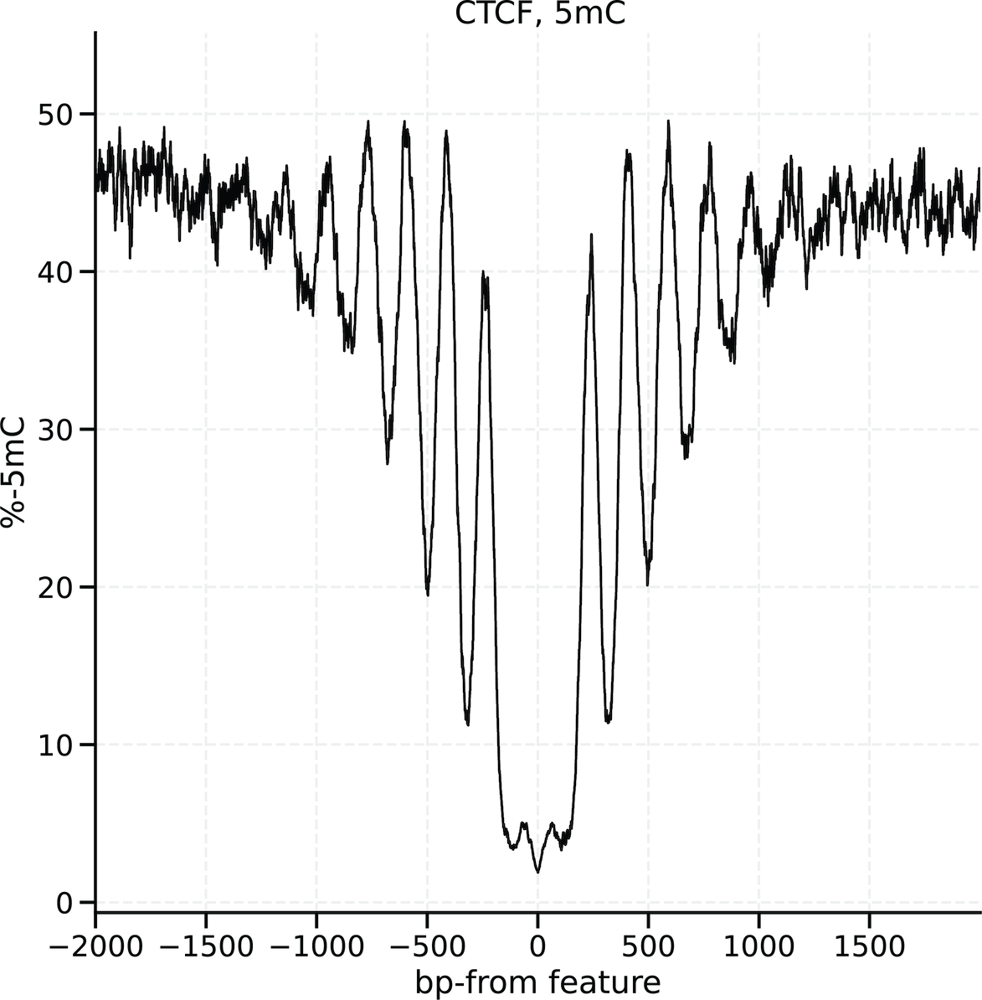

Basic Usage
modkit is a bioinformatics tool for working with modified bases from Oxford Nanopore.

Installation
Pre-compiled binaries are provided for Linux from the release
page. We recommend the use of these in
most circumstances. As a rust-based project, modkit can also be installed with
cargo.
git clone https://github.com/nanoporetech/modkit.git
cd modkit
cargo install --path .
# or
cargo install --git https://github.com/nanoporetech/modkit.git
Common Use Cases
- Creating a bedMethyl table with
pileup - Updating and Adjusting MM tags with
adjust-modsandupdate-tags - Summarizing a modBAM with
summary - Making a motif BED file with
motif-bed - Extracting per-read base modification data into a table
- Convert modification probabilities into hard calls
- Removing base modification calls at the ends of reads
- Narrow analysis to only specific positions with a BED file
- Repairing/adding MM/ML tags to reads with clipped sequences
- Creating hemi-methylation pattern bedMethyl tables with
pileup-hemi - Performing differential methylation scoring with
dmr
Notes and troubleshooting
- General troubleshooting
- Threshold evaluation examples (for advanced users)
Constructing bedMethyl tables.
A primary use of modkit is to create summary counts of modified and unmodified bases in
an extended bedMethyl format.
bedMethyl files tabulate the counts of base modifications from every sequencing read over
each aligned reference genomic position. In order to create a bedMethyl table, your modBAM
must be aligned to a reference genome. The genome sequence is only required if you are using
the --cpg flag or traditional preset. Only primary alignments are used in generating
the table, it is recommended to mark duplicate alignments before running as multiple primary
alignments can be double counted (but the behavior is logged). See limitations
for details.
Basic usage
In its simplest form modkit pileup creates a bedMethyl file using the following:
modkit pileup path/to/reads.bam output/path/pileup.bed --log-filepath pileup.log
No reference sequence is required. A single file (described below) with base count summaries will be created. The final argument here specifies an optional log file output.
The program performs best-practices filtering and manipulation of the raw data stored in the input file. For further details see filtering modified-base calls.
Narrowing output to CpG dinucleotides
For user convenience, the counting process can be modulated using several additional transforms and filters. The most basic of these is to report only counts from reference CpG dinucleotides. This option requires a reference sequence in order to locate the CpGs in the reference:
modkit pileup path/to/reads.bam output/path/pileup.bed --cpg --ref path/to/reference.fasta
Note that when passing a reference with --ref a FASTA index .fai file is required to be at path/to/reference.fasta.fai.
To restrict output to only certain CpGs, pass the --include-bed option with the CpGs to be used,
see this page for more details.
modkit pileup path/to/reads.bam output/path/pileup.bed \
--cpg \
--ref path/to/reference.fasta \
--include-bed path/to/my_cpgs.bed
The program also contains preset which combine several options for ease of use. The
traditional preset,
modkit pileup path/to/reads.bam output/path/pileup.bed \
--ref path/to/reference.fasta \
--preset traditional
performs three transforms:
- restricts output to locations where there is a CG dinucleotide in the reference,
- reports only a C and 5mC counts, using procedures to take into account counts of other forms of cytosine modification (notably 5hmC), and
- aggregates data across strands. The strand field of the output will be marked as '.' indicating that the strand information has been lost.
Using this option is equivalent to running with the options:
modkit pileup path/to/reads.bam output/path/pileup.bed --cpg --ref <reference.fasta> --ignore h --combine-strands
Narrowing output to specific motifs
By default, modkit will output a BED row for all genomic positions where
there is at least one base modification in the input modBAM. We define a motif
as a short DNA sequence potentially containing degenerate
codes. To ease downstream
analysis, the --motif <Motif> <offset, 0-based> option can be used to
pre-filter and annotate the bedMethyl rows. The --cpg flag is a alias for
--motif CG 0 where the sequence motif is CG and the offset is 0, meaning
pileup base modification counts for the first C in the motif on the top
strand the second C (complement to G) on the bottom strand. Another example
may be --motif GATC 1, signaling to pileup counts for the A in the second
position on the top strand and the A in the third position on the bottom
strand.
When multiple motifs are specified the name column (column
4), will indicate which motif the counts are
tabulated for. For example, if --motif CGCG 2 --motif CG 0 are passed you may
see lines such as:
oligo_741_adapters 39 40 m,CG,0 4 - 39 40 255,0,0 4 100.00 4 0 0 0 0 0 0
oligo_741_adapters 39 40 m,CGCG,2 4 - 39 40 255,0,0 4 100.00 4 0 0 0 0 0 0
The --combine-strands flag can be combined with --motif however all motifs
must be reverse-complement palindromic (CG is a palindrome but CHH is
not).
Partitioning reads based on SAM tag values
If have a modBAM with reads from different conditions are other SAM tag annotations (for example RG or HP) you
can pass the --partition-tag option and modkit will output a separate bedMethyl with counts for only the reads
with that tag value. For example, if you have haplotype-annotated reads with the HP tag, you could use a command
like the following:
modkit pileup path/to/reads.bam output/directory/ --cpg --ref <reference.fasta> --partition-tag HP --prefix haplotyped
The output will be multiple files in placed in output/directory/haplotyped_<1|2|etc>.bed, multiple --partition-tag
options can be passed and the output files will correspond to the observed combinations of tags found in the modBAM.
For example if --partition-tag RG and --partition-tag HP are passed:
outdir/
<prefix>_<RG_value_1>_<HP_value_1>.bed
<prefix>_<RG_value_2>_<HP_value_1>.bed
<prefix>_<RG_value_1>_<HP_value_2>.bed
<prefix>_<RG_value_2>_<HP_value_2>.bed
# ... etc
Note that only tag values that can be easily turned into strings will be considered valid (e.g. numbers, characters,
strings, etc.), array values will not be used, and will result in missing being used. Reads missing all of the
SAM tags will be put in ungrouped.bed.
For more information on the individual options see the Advanced Usage help document.
Description of bedMethyl output.
Below is a description of the bedMethyl columns generated by modkit pileup. A brief description of the
bedMethyl specification can be found on Encode.
Definitions:
- Nmod - Number of calls passing filters that were classified as a residue with a specified base modification.
- Ncanonical - Number of calls passing filters were classified as the canonical base rather than modified. The
exact base must be inferred by the modification code. For example, if the modification code is
m(5mC) then the canonical base is cytosine. If the modification code isa, the canonical base is adenine. - Nother mod - Number of calls passing filters that were classified as modified, but where the modification is different from the listed base (and the corresponding canonical base is equal). For example, for a given cytosine there may be 3 reads with
hcalls, 1 with a canonical call, and 2 withmcalls. In the bedMethyl row forhNother_mod would be 2. In themrow Nother_mod would be 3. - Nvalid_cov - the valid coverage. Nvalid_cov = Nmod + Nother_mod + Ncanonical, also used as the
scorein the bedMethyl - Ndiff - Number of reads with a base other than the canonical base for this modification. For example, in a row
for
hthe canonical base is cytosine, if there are 2 reads with C->A substitutions, Ndiff will be 2. - Ndelete - Number of reads with a deletion at this reference position
- Nfail - Number of calls where the probability of the call was below the threshold. The threshold can be set on the command line or computed from the data (usually failing the lowest 10th percentile of calls).
- Nnocall - Number of reads aligned to this reference position, with the correct canonical base, but without a base modification call. This can happen, for example, if the model requires a CpG dinucleotide and the read has a CG->CH substitution such that no modification call was produced by the basecaller.
bedMethyl column descriptions.
| column | name | description | type |
|---|---|---|---|
| 1 | chrom | name of reference sequence from BAM header | str |
| 2 | start position | 0-based start position | int |
| 3 | end position | 0-based exclusive end position | int |
| 4 | modified base code and motif | single letter code for modified base and motif when more than one motif is used | str |
| 5 | score | equal to Nvalid_cov | int |
| 6 | strand | '+' for positive strand '-' for negative strand, '.' when strands are combined | str |
| 7 | start position | included for compatibility | int |
| 8 | end position | included for compatibility | int |
| 9 | color | included for compatibility, always 255,0,0 | str |
| 10 | Nvalid_cov | see definitions above. | int |
| 11 | percent modified | (Nmod / Nvalid_cov) * 100 | float |
| 12 | Nmod | see definitions above | int |
| 13 | Ncanonical | see definitions above | int |
| 14 | Nother_mod | see definitions above | int |
| 15 | Ndelete | see definitions above | int |
| 16 | Nfail | see definitions above | int |
| 17 | Ndiff | see definitions above | int |
| 18 | Nnocall | see definitions above | int |
Performance considerations
The --interval-size, --threads, --chunk-size, and --max-depth parameters can be used to tweak the parallelism and memory consumption of modkit pileup.
The defaults should be suitable for most use cases, for more details see performance considerations sections.
Make hemi-methylation bedMethyl tables with pileup-hemi
Base modifications in DNA are inherently single-stranded, they (usually [^1]) don't change the base pairing of the modified base. However, it may be of interest to know the correspondence between the methylation state of a single base and another nearby base on the opposite strand - on the same molecule. In CpG dinucleotides, this is called "hemi-methylation", when one cytosine is methylated and the neighbor on the opposite strand is not:
m
5'GATCGTACA
CTAGCATGT
-
In the above diagram, the cytosine in the fourth position on the positive strand is methylated (5mC) and the cytosine in the fifth position is canonical (-), indicating a "hemi-methylation".
In the case of 5mC and canonical, there are 4 "patterns" of methylation:
m,m (5mC, 5mC)
-,m (canonical, 5mC)
m,- (5mC, canonical)
-,- (canonical, canonical)
These are all measured at the single molecule level, meaning each molecule must report on both strands (as
is the case with duplex reads). For CpGs in the example above the
MM tags would be C+m? and G-m? for the top-strand and bottom-strand cytosines, respectively.
The modkit pileup-hemi command will perform an aggregation of the methylation "patterns" at genomic positions. An example
command to perform hemi-methylation analysis at CpGs would be
modkit pileup-hemi \
/path/to/duplex_reads.bam \
--cpg \
-r /path/to/reference.fasta \
-o hemi_pileup.bed \
--log modkit.log
Many of the pileup options are available in pileup-hemi with a couple differences: :
- A motif must be provided. The
--cpgflag is a preset to aggregate CpG hemi-methylation patterns as shown above. If a motif is provided (as an argument to--motif) it must be reverse-complement palindromic. - A reference must be provided.
- Both the positive strand base modification probability and the negative strand base modification probability must be above the pass threshold.
See Advanced Usage for details on all the options.
Description of hemi-methylation patterns
The modkit pileup-hemi command aggregates a pair of base modification calls at each reference motif position
for each double-stranded DNA molecule. The base modification "pattern" indicates the methylation state on each base
in 5-prime to 3-prime order, using the base modification code to indicate the identity of the base modification and
- to indicate canonical (unmodified). For example m,-,C would mean the first base (from the reference 5' direction)
is 5mC and the second base is unmodified and the primary base is cytosone. Similarly, h,m,C indicates the first base is
5hmC and the second base is 5mC. The primary base called by the read is included to help disambiguate the unmodified
patterns (-,-). All patterns recognized at a location will be reported in the bedMethyl output.
Definitions:
- Npattern - Number of call-pairs passing filters that had the pattern and primary base in column 4. E.g.
m,-,Cindicates the first base in the 5' to 3' direction is 5mC, the second base is unmodified and the primary base in the reads was C. - Ncanonical - Number of call-pairs passing filters that were classified as unmodified (i.e. the pattern is
-,-). - Nother_pattern - Number of call-pairs passing filters where the pattern is different from the pattern in
column 4, but where the primary read base is the same. This count includes the unmodified pattern (
-,-). Note this differs frompileupwhere Nother does not contain the canonical counts. - Nvalid_cov - the valid coverage, total number of valid call-pairs.
- Ndiff - Number of reads with a primary base other than the primary base in column 4.
- Ndelete - Number of reads with a deletion at this reference position.
- Nfail - Number of call-pairs where the probability of the at least one of the calls in the pair was below the pass threshold. The threshold can be set on the command line or computed from the data (usually failing the lowest 10th percentile of calls).
- Nnocall - Number of reads where either one or both of the base modification calls was not present in the read.
bedMethyl column descriptions.
| column | name | description | type |
|---|---|---|---|
| 1 | chrom | name of reference sequence from BAM header | str |
| 2 | start position | 0-based start position | int |
| 3 | end position | 0-based exclusive end position | int |
| 4 | methylation pattern | comma-separated pair of modification codes - means canonical, followed by the primary read base | str |
| 5 | score | equal to Nvalid_cov | int |
| 6 | strand | always '.' because strand information is combined | str |
| 7 | start position | included for compatibility | int |
| 8 | end position | included for compatibility | int |
| 9 | color | included for compatibility, always 255,0,0 | str |
| 10 | Nvalid_cov | see definitions above | int |
| 11 | fraction modified | Npattern / Nvalid_cov | float |
| 12 | Npattern | see definitions above | int |
| 13 | Ncanonical | see definitions above | int |
| 14 | Nother_pattern | see definitions above | int |
| 15 | Ndelete | see definitions above | int |
| 16 | Nfail | see definitions above | int |
| 17 | Ndiff | see definitions above | int |
| 18 | Nnocall | see definitions above | int |
Limitations
- Only one motif can be used at a time, this limitation may be removed in a later version.
- Partitioning on tag key:value pairs is not currently supported.
[^1] In biology, there are almost always exceptions to every rule!
Updating and Adjusting MM tags.
The adjust-mods subcommand can be used to manipulate MM (and corresponding ML) tags in a
modBam. In general, these simple commands are run prior to pileup, visualization, or
other analysis. For adjust-mods and update-tags, if a correct MN tag is found, secondary and supplementary
alignments will be output. See troubleshooting for details.
Ignoring a modification class.
To remove a base modification class from a modBAM and produce a new modBAM, use the
--ignore option for adjust-mods.
modkit adjust-mods input.bam output.adjust.bam --ignore <mod_code_to_ignore>
For example the command below will remove 5hmC calls, leaving just 5mC calls.
modkit adjust-mods input.bam output.adjust.bam --ignore h
For technical details on the transformation see Removing modification calls from BAMs.
Combining base modification probabilities.
Combining base modification probabilities may be desirable for downstream analysis or
visualization. Unlike --ignore which removes the probability of a class, --convert
will sum the probability of one class with another if the second class already exists. For
example, the command below will convert probabilities associated with h probability into
m probability. If m already exists, the probabilities will be summed. As described in
changing the modification code,
if the second base modification code doesn't exist, the probabilities are left unchanged.
modkit adjust-mods input.bam output.convert.bam --convert h m
Updating the flag (? and .).
The specification (Section 1.7) allows
for omission of the MM flag, however this may not be the intent of missing base
modification probabilities for some models. The command below will add or change the ? flag to a modBAM.
modkit adjust-mods input.bam output.bam --mode ambiguous
Another option is to set the flag to ., the "implicitly canonical" mode:
modkit adjust-mods input.bam output.bam --mode implicit
Changing the base modification code.
Some functions in modkit or other tools may require the mod-codes in the MM tag be in
the specification.
For example, the following command will change C+Z, tags to C+m, tags.
modkit adjust-mods input.bam output.bam --convert Z m
Inspecting base modification probabilities
For details on how base modification probabilities are calculated, see the FAQ page
For most use cases the automatic filtering enabled in modkit will produce nearly ideal results.
However, in some cases such as exotic organisms or specialized assays, you may want to interrogate the base modification probabilities directly and tune the pass thresholds.
The modkit sample-probs command is designed for this task.
There are two ways to use this command, first by simply running modkit sample-probs $mod_bam to get a tab-separated file of threshold values for each modified base.
This can save time in downstream steps where you wish to re-use the threshold value by passing --filter-threshold and skip re-estimating the value.
To generate more advanced output, add --hist --out-dir $output_dir to the command and generate per-modification histograms of the output probabilities.
Using the command this way produces 3 files in the $output_dir:
- An HTML document containing a histogram of the total counts of each probability emitted for each modification code (including canonical) in the sampled reads.
- Another HTML document containing the proportions of each probability emitted.
- A tab-separated table with the same information as the histograms and the percentile rank of each probability value.
The schema of the table is as follows:
| column | name | description | type |
|---|---|---|---|
| 1 | code | modification code or '-' for canonical | string |
| 2 | primary base | the primary DNA base for which the code applies | string |
| 3 | range_start | the inclusive start probability of the bin | float |
| 4 | range_end | the exclusive end probability of the bin | float |
| 5 | count | the total count of probabilities falling in this bin | int |
| 6 | frac | the fraction of the total calls for this code/primary base in this bin | float |
| 7 | percentile_rank | the percentile rank of this probability bin | float |
From these plots and tables you can decide on a pass threshold per-modification code and use --mod-threshold/--filter-threshold accordingly.
Summarizing a modBAM.
The modkit summary sub-command is intended for collecting read-level statistics on either a sample of reads, a region, or an entire modBam.
It is important to note that the default behavior of modkit summary is to take a sample of the reads to get a quick estimate.
Summarize the base modification calls in a modBAM.
modkit summary input.bam
will output a table similar to this
> parsing region chr20 # only present if --region option is provided
> sampling 10042 reads from BAM # modulated with --num-reads
> calculating threshold at 10% percentile # modulated with --filter-percentile
> calculated thresholds: C: 0.7167969 # calculated per-canonical base, on the fly
# bases C
# total_reads_used 9989
# count_reads_C 9989
# pass_threshold_C 0.7167969
# region chr20:0-64444167
base code pass_count pass_frac all_count all_frac
C m 1192533 0.58716166 1305956 0.5790408
C h 119937 0.0590528 195335 0.086608544
C - 718543 0.3537855 754087 0.33435062
Description of columns in modkit summary:
Totals table
The lines of the totals table are prefixed with a # character.
| row | name | description | type |
|---|---|---|---|
| 1 | bases | comma-separated list of canonical bases with modification calls. | str |
| 2 | total_reads_used | total number of reads from which base modification calls were extracted | int |
| 3+ | count_reads_{base} | total number of reads that contained base modifications for {base} | int |
| 4+ | filter_threshold_{base} | filter threshold used for {base} | float |
Modification calls table
The modification calls table follows immediately after the totals table.
| column | name | description | type |
|---|---|---|---|
| 1 | base | canonical base with modification call | char |
| 2 | code | base modification code, or - for canonical | char |
| 3 | pass_count | total number of passing (confidence >= threshold) calls for the modification in column 2 | int |
| 4 | pass_frac | fraction of passing (>= threshold) calls for the modification in column 2 | float |
| 5 | all_count | total number of calls for the modification code in column 2 | int |
| 6 | all_frac | fraction of all calls for the modification in column 2 | float |
For more details on thresholds see filtering base modification calls.
By default modkit summary will only use ten thousand reads when generating the summary
(or fewer if the modBAM has fewer than that). To use all of the reads in the modBAM set
the --no-sampling flag.
modkit summary input.bam --no-sampling
There are --no-filtering, --filter-percentile, and --filter-threshold options that
can be used with or without sampling.
Passing a threshold directly.
To estimate the pass thresholds on a subset of reads, but then summarize all of the
reads, there is a two-step process. First, determine the thresholds with modkit sample-probs (see usage for more details). Then run
modkit summary with the threshold value specified.
modkit sample-probs input.bam [--sampling-frac <frac> | --num-reads <num>]
This command will output a table like this:
> sampling 10042 reads from BAM
base percentile threshold
C 10 0.6972656
C 50 0.96484375
C 90 0.9941406
You can then use pass this threshold directly to modkit summary:
modkit summary input.bam \
--filter-threshold 0.6972656 \ # filter 10% lowest confidence calls
--no-sampling
Calculating modification statistics in regions
There are many analysis operations available in modkit once you've generated a bedMethyl table.
One such operation is to calculate aggregation statistics on specific regions, for example in CpG islands or gene promoters.
The modkit stats command is designed for this purpose.
# these files can be found in the modkit repository
cpgs=tests/resources/cpg_chr20_with_orig_names_selection.bed
sample=tests/resources/lung_00733-m_adjacent-normal_5mc-5hmc_chr20_cpg_pileup.bed.gz
modkit stats ${sample} --regions ${cpgs} -o ./stats.tsv [--mod-codes "h,m"]
Note that the argument
--mod-codescan alternatively be passed multiple times, e.g. this is equivalent:
--mod-codes c --mod-codes h
The output TSV has the following schema:
| column | Name | Description | type |
|---|---|---|---|
| 1 | chrom | name of reference sequence from BAM header | str |
| 2 | start position | 0-based start position | int |
| 3 | end position | 0-based exclusive end position | int |
| 4 | name | name of the region from input BED (. if not provided) | str |
| 5 | strand | Strand (+, -, .) from the input BED (. assumed for when not provided) | str |
| 6+ | count_x | total number of x base modification codes in the region | int |
| 7+ | count_valid_x | total valid calls for the primary base modified by code x | int |
| 8+ | percent_x | count_x / count_vali_x * 100 | float |
Columns 6, 7, and 8 are repeated for each modification code found in the bedMethyl file or provided with --mod-codes argument.
An example output:
chrom start end name strand count_h count_valid_h percent_h count_m count_valid_m percent_m
chr20 9838623 9839213 CpG: 47 . 12 1777 0.6752954 45 1777 2.532358
chr20 10034962 10035266 CpG: 35 . 7 1513 0.46265697 0 1513 0
chr20 10172120 10172545 CpG: 35 . 15 1229 1.2205045 28 1229 2.278275
chr20 10217487 10218336 CpG: 59 . 29 2339 1.2398461 108 2339 4.617358
chr20 10433628 10434345 CpG: 71 . 29 2750 1.0545455 2 2750 0.07272727
chr20 10671925 10674963 CpG: 255 . 43 9461 0.45449743 24 9461 0.25367296
Calling mods in a modBAM
The call-mods subcommand in modkit transforms one modBAM into another
modBAM where the base modification probabilities have been clamped to 100% and
0%. If the --filter-threshold and/or --mod-threshold
options are provided, base modification calls
failing the threshold will be removed prior to changing the probabilities. The
output modBAM can be used for visualization, pileup, or other applications.
For call-mods, if a correct MN tag is found, secondary and supplementary
alignments will be output. See troubleshooting for details.
A modBAM that has been transformed with call-mods using --filter-threshold
and/or --mod-threshold cannot be re-transformed with different thresholds.
Note on pileup with clamped probabilities: modkit pileup will attempt to
estimate the threshold probability by default, but it is unnecessary if the
modBAM is the result of call-mods. The threshold probabilities will be
artificially high (i.e. not representative of the model's output
probabilities). Similarly, specifying --filter-threshold and
--mod-threshold is not useful because all the ML probabilities have been set
to 0 and 100%.
Example usages
Estimate the threshold on the fly, apply to modBAM and clamp the modification calls to certainty.
modkit call-mods <in.bam> <out.bam>
Specify a filter threshold for your use-case
modkit call-mods <in.bam> <out.bam> --filter-threshold A:0.9 --mod-threshold a:0.95 --filter-threshold C:0.97
Call mods with the estimated threshold and ignore modification calls within 100 base pairs of the ends of the reds
modkit call-mods <in.bam> <out.bam> --edge-filter 100
Removing modification calls at the ends of reads
If you have reads where you know base modifications near the ends should not be used
(for example, if they are in adapters), you can use the --edge-filter <n_basepairs> option.
Two comma-separated values may be provided to asymmetrically filter out
base modification calls from the start and end of reads. For example, 4,8 will
filter out base modification calls in the first 4 and last 8 bases of the read. One value
will filter symmetrically.
pileup, will ignore base modification calls that are<n_basepairs>from the ends.adjust-mods, will remove base modification calls that are<n_basepairs>from the ends from the resultant output modBAM.summary, will ignore base modification calls that are<n_basepairs>from the ends.sample-probs, will ignore base modification calls that are<n_basepairs>from the ends.call-mods, will remove base modification calls that are<n_basepairs>from the ends from the resultant output modBAM.extract, will ignore base modification calls that are<n_basepairs>from the ends, this also applies when making the read-calls table (see intro to extract).
In pileup, call-mods, and extract the edge-filter is also respected when estimating the pass-thresholds.
All commands have the flag --invert-edge-filter that will keep only base modification probabilities within
<n_basepairs> of the ends of the reads.
Example usages
Call mods with the estimated threshold and ignore modification calls within 100 base pairs of the ends of the reads
modkit call-mods <in.bam> <out.bam> --edge-filter 100
Perform pileup, ignoring base modification calls within 100 base pairs of the ends of the reads
modkit pileup <in.bam> <out.bed> --edge-filter 100
Filter out base modification calls within the first 25 bases or the last 10 bases.
modkit pileup <in.bam> <out.bed> --edge-filter 25,10
Repair MM/ML tags on trimmed reads
The modkit repair command is useful when you have a BAM with reads where the
canonical sequences have been altered in some way that either renders the MM
and ML tags invalid (for example, trimmed or hard-clipped) or the data has
been lost completely. This command requires that you have the original base
modification calls for each read you want to repair, and it will project these
base modification calls onto the sequences in the altered BAM.
The command uses two arguments called the "donor" and the "acceptor". The
donor, contains the original, correct, MM and ML tags and the acceptor is
either missing MM and ML tags or they are invalid (they will be discarded
either way). The reads in the donor must be a superset of the reads in the
acceptor, meaning you can have extra reads in the donor BAM if some reads have
been removed or filtered earlier in the workflow. Both the donor and the
acceptor must be sorted by read name prior to running modkit repair.
Duplicate reads in the acceptor are allowed so long as they have valid SEQ
fields. Lastly, modkit repair only works on reads that have been trimmed,
other kinds of alteration such as run-length-encoding are not currently
supported. Split reads, or other derived transformations, are not currently
repairable with this command.
For example a typical workflow may look like this:
# original base modification calls
basecalls_5mC_5hmC.bam
# basecalls that have been trimmed
trimmed.bam # could also be fastq, but would require conversion to BAM
# the two BAM files need to be sorted
samtools -n trimmed.bam -O BAM > trimed_read_sort.bam
samtools -n basecalls_5mC_5hmC.bam -O BAM > basecalls_5mC_5hmC_read_sort.bam
modkit repair \
--donor-bam basecalls_5mC_5hmC_read_sort.bam \
--acceptor-bam trimed_read_sort.bam \
--log-filepath modkit_repair.log \
--output-bam trimmed_repaired.bam
Working with sequence motifs
The modkit motif suite contains tools for discovery and exploration of short degenerate sequences (motifs) that may be enriched in a sample.
A common use case is to discover the motifs enriched for modification in a native bacterial sample which can give indication of methyltransferase enzymes present in the genomes present in the sample.
The following tools are available:
- Find enriched motifs de novo from a bedMethyl with
search. evaluateorrefinea table of known motifs- Making a motif BED file with
motif bed
Making a motif BED file.
Downstream analysis may require a BED file to select motifs of interest. For example, selecting GATC motifs in E. coli. This command requires a reference sequence in FASTA a motif to find, which can include IUPAC ambiguous bases and a position within the motif.
The following command would make a BED file for CG motifs.
modkit motif-bed reference.fasta CG 0 1> cg_modifs.bed
The output is directed to standard out.
Find highly modified motif sequences
The modkit find-motifs command will attempt to summarize short genome sequences (motifs) that are more found to be highly modified (i.e. enriched for methylation).
The input to this command is a bedMethyl generated by modkit pileup and the reference sequence used.
For example, to run the command with default settings (recommended):
bedmethyl=/path/to/pileup.bed
ref=/path/to/reference.fasta
modkit motif search \
-i ${bedmethyl} \
-r ${ref} \
-o ./motifs.tsv \
--threads 32 \
--log ./modkit_find_motifs_log.txt
Specifying an output with -o will generate a machine-readable tab-separated-values file, a human-readable version of the table will always be logged to the terminal and the logfile.
Output format
All output tables are output in two formats, machine-readable and human-readable. The human-readable tables are always output to the log and terminal, the machine-readable tables are output to files specified on the command line.
Machine-readable table
| column | name | description | type |
|---|---|---|---|
| 1 | mod_code | code specifying the modification found in the motif | str |
| 2 | motif | sequence of identified motif using IUPAC codes | str |
| 3 | offset | 0-based offset into the motif sequence of the modified base | int |
| 4 | frac_mod | fraction of time this sequence is found in the high modified set col-5 / (col-5 + col-6) | float |
| 5 | high_count | number of occurances of this sequence in the high-modified set | int |
| 6 | low_count | number of occurances of this sequence in the low-modified set | int |
| 7 | mid_count | number of occurances of this sequence in the mid-modified set | int |
Human-readable table
| column | name | description | type |
|---|---|---|---|
| 1 | motif | human-readable representation of the motif sequence with the modification code in brackets | str |
| 2 | frac_mod | fraction of time this sequence is found in the high modified set col-3 / (col-3 + col-4) | float |
| 3 | high_count | number of occurances of this sequence in the high-modified set | int |
| 4 | low_count | number of occurances of this sequence in the low-modified set | int |
| 5 | mid_count | number of occurances of this sequence in the mid-modified set | int |
Specifying known motifs
Multiple motif sequences suspected to be present can be specified with the --known-motif option.
A machine-readable table of the motif sequences that are not found during the search can be specified with the --known-motifs-table option.
Using this option will add two columns to the above tables:
| name | description | type |
|---|---|---|
| status | equal, Subset, Superset, or Disjoint describes the relationship of the discovered motif to the known motif | str |
| closest_known_motif | of all motifs specified with --known-motif the one that is most similar to the discovered motif | str |
If any of the known motifs are not found during the search process an additional table is also emitted in machine- and human-readable versions.
Machine-readable table
| column | name | description | type |
|---|---|---|---|
| 1 | mod_code | code specifying the modification found in the motif | str |
| 2 | motif | sequence of identified motif using IUPAC codes | str |
| 3 | offset | 0-based offset into the motif sequence of the modified base | int |
| 4 | frac_mod | fraction of time this sequence is found in the high modified set col-5 / (col-5 + col-6) | float |
| 5 | high_count | number of occurances of this sequence in the high-modified set | int |
| 6 | low_count | number of occurances of this sequence in the low-modified set | int |
| 7 | mid_count | number of occurances of this sequence in the mid-modified set | int |
| 8 | status | equal, Subset, Superset, or Disjoint describes the relationship of the known motif to the closest discovered motif | str |
| 9 | closest_found_motif | which of the discovered motifs is most simuilar to the known motif | str |
Human-readable table
| column | name | description | type |
|---|---|---|---|
| 1 | motif | human-readable representation of the motif sequence with the modification code in brackets | str |
| 2 | frac_mod | fraction of time this sequence is found in the high modified set col-3 / (col-3 + col-4) | float |
| 3 | high_count | number of occurances of this sequence in the high-modified set | int |
| 4 | low_count | number of occurances of this sequence in the low-modified set | int |
| 5 | mid_count | number of occurances of this sequence in the mid-modified set | int |
| 6 | status | equal, Subset, Superset, or Disjoint describes the relationship of the known motif to the closest discovered motif | str |
| 7 | closest_found_motif | which of the discovered motifs is most simuilar to the known motif | str |
Simple description of the search algorithm
The first step in find-motifs is to categorize each genomic position in the pileup into one of three groups based on the fraction modified column in the bedMethyl:
- Low-modified
- Mid-modified
- High-modified
The threshold values for each group can be set on the command line (--high-thresh and --low-thresh).
For example, consider a high threshold of 0.6 and a low threshold of 0.2 the following 3 bedMethyl records would be put into the high-, low-, and mid-groups, respectively:
contig1 6 7 a 27 - 6 7 255,0,0 27 96.30 26 1 0 0 3 0 0
contig1 8 9 a 24 - 8 9 255,0,0 24 4.17 1 23 0 0 5 1 0
contig1 218 219 a 21 + 218 219 255,0,0 21 28.57 6 15 0 2 3 0 0
The sequence around each modified position is then collected from the reference FASTA file.
The length of the sequence can be set with the --context-size option, accepting two values: the number of bases upstream and the number of bases downstream of the modified location.
For example --context-size 12 12 will collect 12 bases upstream and 12 bases downstream of the modified base for a maximum motif length of 25 base pairs.
The algorithm then iteratively expands, contracts, and merges sequences while the following criteria are met:
- The number of occurrences in the high-modified set is greater than
min_sites(set by--min-sites). - The fraction \( \frac{\textit{H}}{\textit{H} + \textit{L}} \), is greater than
frac_mod(set with--min-frac-mod), where \( \textit{H} \) and \( \textit{L} \) is the number of total sequence contexts in the high-modified and low-modified set, respectively. - The log-odds of the context being in the high-modified category is greater than
min_log_odds(set with--min-log-odds).
Once a motif sequence cannot be changed (made more general or more restrictive) without violating one of these criteria, the motif sequence is considered complete. As the algorithm continues, context sequences that match discovered sequences are removed from consideration.
A secondary search step is also performed by starting with every k-mer (where k is less than the total sequence length, 3 by default, set with --exhaustive-seed-len) at every motif position.
The log-odds threshold for this search is usually higher and set with --exhaustive-seed-min-log-odds.
Decreasing this value can drastically increase computational time.
Tuning parameters and --skip-search
The default parameters have been picked to be sufficiently sensitive, however if you decide to adjust the parameters in general increasing sensitivity will increase compute time.
- Increasing the
--min-frac-modwill stop search earlier which will decrease compute time. - Decreasing
--min-siteshas the largest effect and can especially cause the secondary search to crawl more sequences. Decreasing--min-sitesalong with--skip-searchmay be a useful technique to find very rare sequence motifs. - Increasing
--exhaustive-seed-min-log-oddscan drastically decrease compute time (sometimes while maintaining sensitivity).
Also consider the additional steps in performance considerations.
Evaluate a table of known motifs
The modkit search command has an option to provide any number of known motifs with --know-motif.
If you already have a list of candidate motifs (e.f. from a previous run of modkit motif search) you can check these motifs quickly against a bedMethyl table with modkit motif evaluate.
modkit motif evaluate -i ${bedmethyl} --known-motifs-table motifs.tsv -r ${ref}
Similarly, the search algorithm can be run using known motifs as seeds:
modkit motif refine -i ${bedmethyl} --known-motifs-table motifs.tsv -r ${ref}
The output tables to both of these commands have the same schema:
| column | name | description | type |
|---|---|---|---|
| 1 | mod_code | code specifying the modification found in the motif | str |
| 2 | motif | sequence of identified motif using IUPAC codes | str |
| 3 | offset | 0-based offset into the motif sequence of the modified base | int |
| 4 | frac_mod | fraction of time this sequence is found in the high modified set col-5 / (col-5 + col-6) | float |
| 5 | high_count | number of occurances of this sequence in the high-modified set | int |
| 6 | low_count | number of occurances of this sequence in the low-modified set | int |
| 7 | mid_count | number of occurances of this sequence in the mid-modified set | int |
| 8 | log_odds | log2 odds of the motif being in the high-modified set | int |
In the human-readable table columns (1) and (2) are merged to show the modification code in the motif sequence context, the rest of the columns are the same as the machine-readable table.
Extracting base modification information
The modkit extract full sub-commands will produce a table containing the base modification probabilities, the read sequence context, and optionally aligned reference information.
For extract full and extract calls, if a correct MN tag is found, secondary and supplementary alignments may be output with the --allow-non-primary flag.
See troubleshooting for details.
The table will by default contain unmapped sections of the read (soft-clipped sections, for example).
To only include mapped bases use the --mapped flag. To only include sites of interest, pass a
BED-formatted file to the --include-bed option. Similarly, to exclude sites, pass a BED-formatted
file to the --exclude option. One caution, the files generated by modkit extract can be large (2-2.5x
the size of the BAM). You may want to either use the --num-reads option, the --region option, or
pre-filter the modBAM ahead of time. You can also stream the output to stdout by setting the output to -
or stdout and filter the columns before writing to disk.
Description of output table for extract full
| column | name | description | type |
|---|---|---|---|
| 1 | read_id | name of the read | str |
| 2 | forward_read_position | 0-based position on the forward-oriented read sequence | int |
| 3 | ref_position | aligned 0-based reference sequence position, -1 means unmapped | int |
| 4 | chrom | name of aligned contig, or '.' if the read is Gunmapped | str |
| 5 | mod_strand | strand of the molecule the base modification is on | str |
| 6 | ref_strand | strand of the reference the read is aligned to, or '.' if unmapped | str |
| 7 | ref_mod_strand | strand of the reference with the base modification, or '.' if unmapped | str |
| 8 | fw_soft_clipped_start | number of bases soft clipped from the start of the forward-oriented read | int |
| 9 | fw_soft_clipped_end | number of bases soft clipped from the end of the forward-oriented read | int |
| 10 | read_length | total length of the read | int |
| 11 | mod_qual | probability of the base modification in the next column | int |
| 12 | mod_code | base modification code from the MM tag | str |
| 13 | base_qual | basecall quality score (phred) | int |
| 14 | ref_kmer | reference 5-mer sequence context (center base is aligned base), '.' if unmapped | str |
| 15 | query_kmer | read 5-mer sequence context (center base is aligned base) | str |
| 16 | canonical_base | canonical base from the query sequence, from the MM tag | str |
| 17 | modified_primary_base | primary sequence base with the modification | str |
| 18 | inferred | whether the base modification call is implicit canonical | str |
| 19 | flag | FLAG from alignment record | str |
Tabulating base modification calls for each read position with extract calls
The modkit extract calls command will generate a table of read-level base modification calls using the same thresholding algorithm employed by modkit pileup.
The resultant table has, for each read, one row for each base modification call in that read.
If a base is called as modified then call_code will be the code in the MM tag. If the base is called as canonical the call_code will be - (A, C, G, and T are
reserved for "any modification"). The full schema of the table is below:
| column | name | description | type |
|---|---|---|---|
| 1 | read_id | name of the read | str |
| 2 | forward_read_position | 0-based position on the forward-oriented read sequence | int |
| 3 | ref_position | aligned 0-based reference sequence position, -1 means unmapped | int |
| 4 | chrom | name of aligned contig, or '.' if unmapped | str |
| 5 | mod_strand | strand of the molecule the base modification is on | str |
| 6 | ref_strand | strand of the reference the read is aligned to, or '.' if unmapped | str |
| 7 | ref_mod_strand | strand of the reference with the base modification, or '.' if unmapped | str |
| 8 | fw_soft_clipped_start | number of bases soft clipped from the start of the forward-oriented read | int |
| 9 | fw_soft_clipped_end | number of bases soft clipped from the end of the forward-oriented read | int |
| 10 | read_length | total length of the read | int |
| 11 | call_prob | probability of the base modification call in the next column | int |
| 12 | call_code | base modification call, - indicates a canonical call | str |
| 13 | base_qual | basecall quality score (phred) | int |
| 14 | ref_kmer | reference 5-mer sequence context (center base is aligned base), '.' if unmapped | str |
| 15 | query_kmer | read 5-mer sequence context (center base is aligned base) | str |
| 16 | canonical_base | canonical base from the query sequence, from the MM tag | str |
| 17 | modified_primary_base | primary sequence base with the modification | str |
| 18 | fail | true if the base modification call fell below the pass threshold | str |
| 19 | inferred | whether the base modification call is implicit canonical | str |
| 20 | within_alignment | when alignment information is present, is this base aligned to the reference | str |
| 21 | flag | FLAG from alignment record | str |
Note on implicit base modification calls.
The . MM flag indicates that primary sequence bases without an associated base modification probability
should be inferred to be canonical. By default, when this flag is encountered in a modBAM, modkit extract will
output rows with the inferred column set to true and a mod_qual value of 0.0 for the base modifications
called on that read. For example, if you have a A+a. MM tag, and there are A bases in the read for which
there aren't base modification calls (identifiable as non-0s in the MM tag) will be rows where the mod_code
is a and the mod_qual is 0.0.
Note on non-primary alignments
If a valid MN tag is found, secondary and supplementary alignments can be output in the modkit extract tables above.
See troubleshooting for details on how to get valid MN tags.
To have non-primary alignments appear in the output, the --allow-non-primary flag must be passed.
By default, the primary alignment will have all base modification information contained on the read, including soft-clipped and unaligned read positions.
If the --mapped-only flag is used, soft clipped sections of the read will not be included.
For secondary and supplementary alignments, soft-clipped positions are not repeated. See advanced usage for more details.
Example usages:
Extract a table of base modification probabilities from an aligned and indexed BAM
modkit extract full <input.bam> <output.tsv>
If the index input.bam.bai can be found, intervals along the aligned genome can be performed
in parallel.
Extract a table from a region of a large modBAM
The below example will extract reads from only chr20, and include reference sequence context
modkit extract full <intput.bam> <output.tsv> --region chr20 --ref <ref.fasta>
Extract only sites aligned to a CG motif
modkit motif bed <reference.fasta> CG 0 > CG_motifs.bed
modkit extract full <in.bam> <out.tsv> --ref <ref.fasta> --include-bed CG_motifs.bed
Extract only sites that are at least 50 bases from the ends of the reads
modkit extract full <in.bam> <out.tsv> --edge-filter 50
Extract read-level base modification calls
modkit extract calls <input.bam> <calls.tsv>
Use --allow-non-primary to get secondary and supplementary mappings in the output.
modkit extract calls <input.bam> <output.tsv> --allow-non-primary
See the help string and/or advanced_usage for more details and performace considerations if you encounter issues with memory usage.
Investigating patterns with localise
One a bedMethyl table has been created, modkit localise will use the pileup and calculate per-base modification aggregate information around genomic features of interest.
For example, we can investigate base modification patterns around CTCF binding sites.

The input requirements to modkit localise are simple:
- BedMethyl table that has been bgzf-compressed and tabix-indexed
- Regions file in BED format (plaintext).
- Genome sizes tab-separated file:
<chrom>\t<size_in_bp>
an example command:
modkit localise ${bedmethyl} --regions ${ctcf} --genome-sizes ${sizes}
The output table has the following schema:
| column | Name | Description | type |
|---|---|---|---|
| 1 | mod code | modification code as present in the bedmethyl | str |
| 2 | offset | distance in base pairs from the center of the genome features, negative values reflect towards the 5' of the genome | int |
| 3 | n_valid | number of valid calls at this offset for this modification code | int |
| 4 | n_mod | number of calls for this modification code at this offset | int |
| 5 | percent_modified | n_mod / n_valid * 100 | float |
Optionally the --chart argument can be used to create HTML charts of the modification patterns.
Perform differential methylation scoring
The modkit dmr command contains two subcommands, pair and multi, that will compare pairwise conditions and multiple conditions.
The pair command can be used to perform differential methylation detection on single genome positions (for example CpGs) or regions provided as a BED file.
On the other hand, multi can only be used to compare regions (such as CpG islands), provided as a BED file.
There are essentially three differential methylation workflows:
- Perform differential methylation scoring with a pair of samples on regions of the genome.
- Perform differential methylation scoring across all pairs of samples on regions of the genome.
- Perform base-level differential modification detection for a pair of conditions.
Each application is explained below. For details on the scoping of these applications see the limitations.
Preparing the input data
The inputs to all modkit dmr commands are two or more bedMethyl files (created by modkit pileup) that have been compressed with bgzip and indexed with tabix.
An example of how to generate the input data is shown below:
ref=grch38.fasta
threads=32
norm=normal_sample.bam
norm_pileup=normal_pileup.bed
modkit pileup ${norm} ${norm_pileup} \
--cpg \
--ref ${ref} \
--threads ${threads} \
--log-filepath log.txt
bgzip -k ${norm_pileup}
tabix -p bed ${norm_pileup}.gz
# pileup and compression can also be done in one step
tumor=tumor_sample.bam
tumor_pileup=tumor_pileup.bed.gz
modkit pileup ${tumor} - \
--cpg \
--ref ${ref} \
--threads ${threads} \
--log-filepath log.txt | ${bgzip} -c > ${tumor_pileup}
tabix -p bed ${tumor_pileup}
1. Perform differential methylation scoring of genomic regions for a pair of samples.
Once you have the two samples to be compared in the appropriate format, the final piece necessary is a BED file of the regions to be compared.
Currently, the modkit dmr functionality does not "segment" or otherwise discover regions, however this limitation will be removed in a future release.
To continue with our example we can get CpG Islands from the UCSC table browser.
The data may not always be appropriate input for modkit.
For example, the CpG Islands track has extra columns and a header line:
#bin chrom chromStart chromEnd name length cpgNum gcNum perCpg perGc obsExp
660 chr20 9838623 9839213 CpG: 47 590 47 383 15.9 64.9 0.76
661 chr20 10034962 10035266 CpG: 35 304 35 228 23 75 0.85
Therefore, we need to transform the data with awk or similar, such as:
awk 'BEGIN{FS="\t"; OFS="\t"} NR>1 {print $2, $3, $4, $5}' cpg_islands_ucsc.bed \
| bedtools sort -i - > cpg_islands_ucsc_cleaned.bed
Keeping the name column is optional.
Sorting the regions isn't strictly necessary, the output will be in the same order as the regions file.
Below is an example command to produce the scored output.
The --base option tells modkit dmr which bases to use for scoring the differences, the argument should be a canonical nucleotide (A, C, G, or T) whichever primary sequence base has the modifications you're interested in capturing.
For example, for CpG islands the base we're interested in is C.
regions=cpg_islands_ucsc_cleaned.bed
dmr_result=cpg_islands_tumor_normal.bed
modkit dmr pair \
-a ${norm_pileup}.gz \
--index-a ${norm_pileup}.gz.tbi \ # optional
-b ${tumor_pileup}.gz \
--index-b ${tumor_pileup}.gz.tbi \ # optional
-o ${dmr_result} \ # output to stdout if not present
-r ${regions} \
--ref ${ref} \
--base C \ # may be repeated if multiple modifications are being used
--threads ${threads} \
--log-filepath dmr.log
The ouput of this command will be similar to
chr20 9838623 9839213 CpG: 47 257.34514203447543 C:57 1777 C:601 2091 C:3.21 C:28.74 0.032076534 0.2874223
chr20 10034962 10035266 CpG: 35 1.294227443419004 C:7 1513 C:14 1349 C:0.46 C:1.04 0.00462657 0.010378058
The full schema is described below.
2. Perform differential methylation detection on all pairs of samples over regions from the genome.
The modkit dmr multi command runs all pairwise comparisons for more than two samples for all regions provided in the regions BED file.
The preparation of the data is identical to that for the previous section (for each sample, of course).
Note that if multiple samples are given the same name, they will be combined.
An example command could be:
modkit dmr multi \
-s ${norm_pileup_1}.gz norm1 \
-s ${tumor_pileup_1}.gz tumor1 \
-s ${norm_pileup_2}.gz norm2 \
-s ${tumor_pileup_2}.gz tumor2 \
-o ${dmr_dir} \ # required for multi
-r ${cpg_islands} \ # skip this option to perform base-level DMR
--ref ${ref} \
--base C \
-t 10 \
-f \
--log-filepath dmr_multi.log
For example the samples could be haplotype-partitioned bedMethyl tables or biological replicates.
Unlike for modkit dmr pair a sample name (e.g. norm1 and tumor1 above) must be provided for each input
sample. You can also use --index <filepath> <sample_name> to specify where the tabix index file is for each
sample.
3. Detecting differential modification at single base positions
The modkit dmr pair command has the ability to score individual bases (e.g. differentially methylated CpGs).
To run single-base analysis on one or more paired samples, simply omit the --regions (-r) option when running modkit dmr pair.
When performing single-base analysis the likelihood ratio score and a MAP-based p-value are available.
For details on the likelihood ratio score and the MAP-based p-value, see the scoring details section.
For example the above command becomes:
dmr_result=single_base_haplotype_dmr.bed
modkit dmr pair \
-a ${hp1_pileup}.gz \
-b ${hp2_pileup}.gz \
-o ${dmr_result} \
--ref ${ref} \
--base C \
--threads ${threads} \
--log-filepath dmr.log
Multiple replicates can be provided as well by repeating the -a and -b options, such as:
dmr_result=tumor_normal_single_base_replicates.bed
modkit dmr pair \
-a ${norm_pileup_1}.gz \
-a ${norm_pileup_2}.gz \
-b ${tumor_pileup_1}.gz \
-b ${tumor_pileup_2}.gz \
-o ${dmr_result_replicates} \
--ref ${ref} \
--base C \
--threads ${threads} \
--log-filepath dmr.log
Keep in mind that the MAP-based p-value provided in single-site analysis is based on a "modified" vs "unmodified" model, see the scoring section and limitations for additional details.
Note about modification codes
The modkit dmr commands require the --base option to determine which genome positions to compare, i.e. --base C tells modkit to compare methylation at cytosine bases.
You may use this option multiple times to compare methylation at multiple primary sequence bases.
It is possible that, during pileup a read will have a mismatch and a modification call, such as a C->A mismatch and a 6mA call on that A, and you may not want to use that 6mA call when calculating the differential methylation metrics.
To filter out bedMethyl records like this, modkit uses the SAM specification (page 9) of modification codes to determine which modification codes apply to which primary sequence bases.
For example, h is 5hmC and applies to cytosine bases, a is 6mA and applies to adenine bases.
However, modkit pileup does not require that you use modification codes only in the specification.
If your bedMethyl has records with custom modification codes or codes that aren't in the specification yet, use --assign-code <mod_code>:<primary_base> to indicate the code applies to a given primary sequence base.
Differential methylation output format
The output from modkit dmr pair (and for each pairwise comparison with modkit dmr multi) is (roughly)
a BED file with the following schema:
| column | name | description | type |
|---|---|---|---|
| 1 | chrom | name of reference sequence from bedMethyl input samples | str |
| 2 | start position | 0-based start position, from --regions argument | int |
| 3 | end position | 0-based exclusive end position, from --regions argument | int |
| 4 | name | name column from --regions BED, or chr:start-stop if absent | str |
| 5 | score | difference score, more positive values have increased difference | float |
| 6 | samplea counts | counts of each base modification in the region, comma-separated, for sample A | str |
| 7 | samplea total | total number of base modification calls in the region, including unmodified, for sample A | str |
| 8 | sampleb counts | counts of each base modification in the region, comma-separated, for sample B | str |
| 9 | sampleb total | total number of base modification calls in the region, including unmodified, for sample B | str |
| 10 | samplea percents | percent of calls for each base modification in the region, comma-separated, for sample A | str |
| 11 | sampleb percents | percent of calls for each base modification in the region, comma-separated, for sample B | str |
| 12 | samplea fraction modified | fraction modification (of any kind) in sample A | float |
| 13 | sampleb fraction modified | fraction modification (of any kind) in sample B | float |
an example of the output is given below:
chr20 9838623 9839213 CpG: 47 257.34514203447543 C:57 1777 C:601 2091 C:3.21 C:28.74 0.032076534 0.2874223
chr20 10034962 10035266 CpG: 35 1.294227443419004 C:7 1513 C:14 1349 C:0.46 C:1.04 0.00462657 0.010378058
chr20 10172120 10172545 CpG: 35 5.013026381110649 C:43 1228 C:70 1088 C:3.50 C:6.43 0.035016287 0.06433824
chr20 10217487 10218336 CpG: 59 173.7819873154349 C:136 2337 C:482 1838 C:5.82 C:26.22 0.058194265 0.26224157
chr20 10433628 10434345 CpG: 71 -0.13968153023233754 C:31 2748 C:36 3733 C:1.13 C:0.96 0.0112809315 0.009643719
chr20 10671925 10674963 CpG: 255 6.355823977093678 C:67 9459 C:153 12862 C:0.71 C:1.19 0.0070832013 0.011895506
When performing single-site analysis, the following additional columns are added:
| column | name | description | type |
|---|---|---|---|
| 14 | MAP-based p-value | ratio of the posterior probability of observing the effect size over zero effect size | float |
| 15 | effect size | percent modified in sample A (col 12) minus percent modified in sample B (col 13) | float |
| 16 | balanced MAP-based p-value | MAP-based p-value when all replicates are balanced | float |
| 17 | balanced effect size | effect size when all replicates are balanced | float |
| 18 | pct_a_samples | percent of 'a' samples used in statistical test | float |
| 19 | pct_b_samples | percent of 'b' samples used in statistical test | float |
| 20 | per-replicate p-values | MAP-based p-values for matched replicate pairs | float |
| 21 | per-replicate effect sizes | effect sizes matched replicate pairs | float |
Columns 16-19 are only produced when multiple samples are provided, columns 20 and 21 are only produced when there is an equal number of 'a' and 'b' samples.
When using multiple samples, it is possible that not every sample will have a modification fraction at a position.
When this happens, the statistical test is still performed and the values of pct_a_samples and pct_b_samples reflect the percent of samples from each condition used in the test.
Columns 20 and 21 have the replicate pairwise MAP-based p-values and effect sizes which are calculated based on their order provided on the command line. For example in the abbreviated command below:
modkit dmr pair \
-a ${norm_pileup_1}.gz \
-a ${norm_pileup_2}.gz \
-b ${tumor_pileup_1}.gz \
-b ${tumor_pileup_2}.gz \
...
Column 20 will contain the MAP-based p-value comparing norm_pileup_1 versus tumor_pileup_1 and norm_pileup_2 versus norm_pileup_2.
Column 21 will contain the effect sizes, values are comma-separated.
If you have a different number of samples for each condition, such as:
modkit dmr pair \
-a ${norm_pileup_1}.gz \
-a ${norm_pileup_2}.gz \
-a ${norm_pileup_3}.gz \
-b ${tumor_pileup_1}.gz \
-b ${tumor_pileup_2}.gz \
these columns will not be present.
Segmenting on differential methylation
When running modkit dmr without --regions (i.e. single-site analysis) you can generate regions of differential methylation on-the-fly using the segmenting hidden Markov model (HMM).
To run segmenting on the fly, add the --segments $segments_bed_fp option to the command such as:
dmr_result=single_base_haplotype_dmr.bed
dmr_segments=single_base_segements.bed
modkit dmr pair \
-a ${hp1_pileup}.gz \
-b ${hp2_pileup}.gz \
-o ${dmr_result} \
--segments ${dmr_segments} \ # indicates to run segmentation
--ref ${ref} \
--base C \
--threads ${threads} \
--log-filepath dmr.log
The default settings for the HMM are to run in "coarse-grained" mode which will more eagerly join neighboring sites, potentially at the cost of including sites that are not differentially modified within "Different" blocks.
To activate "fine-grained" mode, pass the --fine-grained flag.
The output schema for the segments is:
| column | name | description | type |
|---|---|---|---|
| 1 | chrom | name of reference sequence from bedMethyl input samples | str |
| 2 | start position | 0-based start position, from --regions argument | int |
| 3 | end position | 0-based exclusive end position, from --regions argument | int |
| 4 | state-name | "different" when sites are differentially modified, "same" otherwise | str |
| 5 | score | difference score, more positive values have increased difference | float |
| 6 | N-sites | number of sites (bedmethyl records) in the segment | float |
| 7 | samplea counts | counts of each base modification in the region, comma-separated, for sample A | str |
| 8 | sampleb counts | counts of each base modification in the region, comma-separated, for sample B | str |
| 9 | samplea percents | percent of calls for each base modification in the region, comma-separated, for sample A | str |
| 10 | sampleb percents | percent of calls for each base modification in the region, comma-separated, for sample B | str |
| 11 | samplea fraction modified | percent modification (of any kind) in sample A | float |
| 12 | sampleb fraction modified | percent modification (of any kind) in sample B | float |
| 13 | effect size | percent modified in sample A (col 11) minus percent modified in sample B (col 12) | float |
Validating ground truth results.
The modkit validate sub-command is intended for validating results in a uniform manner from samples with known modified base content. Specifically the modified base status at any annotated reference location should be known.
Validating from modBAM reads and BED reference annotation.
The input to the modkit validate command will be pairs of modBAM and BED files.
modBAM files should contain modified base calls in the MM/ML tag as input to most modkit commands.
BED files paired to each input modBAM file describe the ground truth modified base status at reference positions.
This ground truth status should be known by the researcher due to previous experimental conditions and cannot be derived by modkit.
modkit validate \
--bam-and-bed sample1.bam sample1_annotation.bed \
--bam-and-bed sample2.bam sample2_annotation.bed
This will produce output such as the following:
> Parsing BED at /path/to/sample1_annotation.bed
> Processed 10 BED lines
> Parsing BED at /path/to/sample2_annotation.bed
> Processed 10 BED lines
> Canonical base: C
> Parsing mapping at /path/to/sample1.bam
> Processed 10 mapping recrods
> Parsing mapping at /path/to/sample2.bam
> Processed 10 mapping recrods
> Raw counts summary
Called Base
┌───┬───────┬───────┬───┬───┬───┬──────────┐
│ │ - │ a │ C │ G │ T │ Deletion │
├───┼───────┼───────┼───┼───┼───┼──────────┤
Ground │ - │ 9,900 │ 100 │ 1 │ 1 │ 1 │ 2 │
Truth │ a │ 100 │ 9,900 │ 1 │ 1 │ 1 │ 2 │
└───┴───────┴───────┴───┴───┴───┴──────────┘
> Balancing ground truth call totals
> Raw accuracy: 99.00%
> Raw modified base calls contingency table
Called Base
┌───┬────────┬────────┐
│ │ - │ a │
├───┼────────┼────────┤
Ground │ - │ 99.00% │ 1.00% │
Truth │ a │ 1.00% │ 99.00% │
└───┴────────┴────────┘
> Call probability threshold: 0.95
> Filtered accuracy: 99.90%
> Filtered modified base calls contingency table
Called Base
┌───┬────────┬────────┐
│ │ - │ a │
├───┼────────┼────────┤
Ground │ - │ 99.90% │ 0.10% │
Truth │ a │ 0.10% │ 99.90% │
└───┴────────┴────────┘
The filtering threshold is computed in the same manner as in all other modkit commands.
Currently only a defined percentage of input data filtering threshold estimation is implemented.
The default value is 10% (as in other modkit commands) and can be adjusted with the --filter-quantile argument.
Other methods (including user-defined thresholds) will be implemented in a future version.
The Call probability threshold is intended a value to be used for user-defined thresholds for other modkit commands.
BED ground truth annotation file:
A BED file is a tab-delimited file. For this command the first 6 fields are processed. These fields are as follows:
| column | name | description | |
|---|---|---|---|
| 1 | chrom | name of reference sequence | str |
| 2 | start position | 0-based start position | int |
| 3 | end position | 0-based exclusive end position | int |
| 4 | mod code | modified base code | str |
| 6 | strand | strand (e.g. +,-,.) | str |
The 5th column is ignored in the validate command.
The 4th column represents the modified base code annotating the status at this reference position (or range of reference positions).
This value can be - representing a canonical base (note that this differs from the remora validate annotation), a single letter code as defined in the modBAM tag specification, or any ChEBI code.
The validate command will assume that any base from the associated modBAM file overlapping these positions should match this annotation.
Output file
The --out-filepath option is provided to allow persistent storage of results in a machine-parseable format without other logging lines.
This format outputs all contingency tables in a machine-parseable format.
For example this contingency table [["ground_truth_label","-","a"],["-",9900,100],["a",100,9900]] would be produced from the above example results.
Calculating methylation entropy
The modkit entropy command will calculate the methylation entropy in genomic windows of defined length across the genome, optionally summarizing these calculations for regions.
Methylation entropy (ME) is a measure of the "information content" in the patterns of methylation reported by the sequencing reads, it could also be thought of as a measure of the randomness in the epialleles (an "epiallele" is the DNA modification at a given position).
This metric was originally proposed by Xie et al. and has been shown to correlation with regulation, aging, and cancer.
Unlike the pileup method in modkit which aggregates the modification calls per genomic position, modkit entropy looks at the co-occurrence of methylation status on individual reads and so the input is a modBAM not a pileup.
To quote Lee et al., "This information is important because such ‘phased’ methylation states can inform us about the epigenetic diversity of cell populations as well as the local regulation states of the epigenome".
Probably the simplest visual description of methylation entropy is the following, a version of which appears in many of the methods papers:

Citation: Lee et al.
{kind=link}
Calculate entropy in windows across the genome
modkit entropy --in-bam ${mod_bam} \
-o ${output_entropy_bedgraph} \
--ref ${ref} \
--threads 32 \
--log-filepath modkit_entropy.log
When the output file, -o, is omitted the output will be to stdout.
Output schema
| column | name | description | type |
|---|---|---|---|
| 1 | chrom | contig name | string |
| 2 | start | start of interval | int |
| 3 | end | end of interval | int |
| 4 | entropy | methylation entropy | float |
| 5 | num_reads | number of reads used | int |
Calculating entropy in BED-specified regions
The command can also summarize the methylation entropy in regions by using the --regions option, for example:
modkit entropy \
--in-bam ${mod_bam} \
-o ${output_directory} \
--regions ${regions_bed_file} \ # BED3 or BED4 file of regions
--cpg \ # specify CpG dinucleotides and combine strands
--ref ${ref} \
--threads 32 \
--log-filepath modkit_entropy.log
The output must now be a directory (specified with -o), a bedGraph with the entropy over the windows with the regions as well as a summary of the methylation entropy in the regions will be output.
By default these files will be regions.bed and windows.bedgraph.
Specifying motifs or primary sequence bases
Similar to pileup you can specify a motif on the command line with --motif and optionally combine the counts across the positive and negative strands with --combine-strands.
If you specify a primary sequence base (with --base) or a motif (with --motif) that is not reverse-complement palindromic modkit will output methylation entropy per-strand.
For example if you want to calculate m6A entropy in DRACH motifs:
${modkit} entropy ${bam} \
-o ${output} \
--regions ${regions} \
--ref ${ref} \
--motif DRACH 2 \
--threads 32 \
--log-filepath modkit_entropy.log \
When performing transcriptome analysis, it's recommended to make a regions BED file of all of the transcripts so that you can rank which transcripts have highest entropy.
Calculation of methylation entropy
The calculation of methylation entropy has been described in the papers linked above. Formally, methylation entropy in modkit is calculated as:
\[ \text{ME} = \frac{-1}{N} \sum_{\textbf{N}} Pr(n_i) * \text{log}_{2}Pr(n_i) \]
Where \( \textbf{N} \) is the set of all methylation patterns and \( Pr(n_i) \) is the empirical probability of that pattern.
To account for the fact that modkit filters base modification calls when they are below a certain confidence level, filtered positions are given a "wildcard" assignment and can match any epiallele at that position.
The entropy calculation implementation in modkit will assign a fractional count to each pattern that the read matches.
For example, suppose a read with epiallele m*mm meaning there are 4 positions in the window (5mC) and this read reports 5mC, followed by a filtered call, and 2 more 5mC calls.
This read will match to patterns [mhmm mmmm mCmm] (m = 5mC, h = 5hmC, and C is canonical cytosine).
When the --num-positions parameter gets large the number of potential patterns becomes large.
Most patterns will probably not have any reads matching to them, so instead of enumerating all possible patterns modkit uses a prefix trie to find all patterns represented in the reads while accounting for filtered positions.
Narrow output to specific positions
The pileup, sample-probs, summary, and extract sub commands have a --include-bed (or --include-positions) option that will restrict analysis to only positions that overlap with the intervals contained within the BED file.
In the case of pileup, summary, and sample-probs, the pass-threshold will be estimated with only base modification probabilities that are aligned to positions overlapping intervals in the BED. In the case of pileup and extract only positions will be reported if they overlap intervals in the BED.
modkit, subcommand documentation
The goal of modkit is to enable best-practices manipulation of BAM files containing
modified base information (modBAMs). The various sub-commands and tools available in
modkit are described below. This information can be obtained by invoking the long help
(--help) for each command.
Advanced usage information.
Modkit is a bioinformatics tool for working with modified bases from Oxford Nanopore
Usage: modkit <COMMAND>
Commands:
pileup Tabulates base modification calls across genomic positions. This command produces a bedMethyl formatted file. Schema and description of fields can be found in the README.
adjust-mods Performs various operations on BAM files containing base modification information, such as converting base modification codes and ignoring modification calls. Produces a BAM output file.
update-tags Renames Mm/Ml to tags to MM/ML. Also allows changing the mode flag from silent '.' to explicitly '?' or '.'.
sample-probs Calculate an estimate of the base modification probability distribution.
summary Summarize the mod tags present in a BAM and get basic statistics. The default output is a totals table (designated by '#' lines) and a modification calls table. Descriptions of the columns can
be found in the README.
call-mods Call mods from a modbam, creates a new modbam with probabilities set to 100% if a base modification is called or 0% if called canonical.
extract Extract read-level base modification information from a modBAM into a tab-separated values table.
repair Repair MM and ML tags in one bam with the correct tags from another. To use this command, both modBAMs _must_ be sorted by read name. The "donor" modBAM's reads must be a superset of the
acceptor's reads. Extra reads in the donor are allowed, and multiple reads with the same name (secondary, etc.) are allowed in the acceptor. Reads with an empty SEQ field cannot be repaired
and will be rejected. Reads where there is an ambiguous alignment of the acceptor to the donor will be rejected (and logged). See the full documentation for details.
dmr Perform DMR test on a set of regions. Output a BED file of regions with the score column indicating the magnitude of the difference. Find the schema and description of fields can in the README.
as well as a description of the model and method. See subcommand help for additional details.
pileup-hemi Tabulates double-stranded base modification patters (such as hemi-methylation) across genomic motif positions. This command produces a bedMethyl file, the schema can be found in the online
documentation.
validate Validate results from a set of mod-BAM files and associated BED files containing the ground truth modified base status at reference positions.
motif Various commands to search for, evaluate, or further regine sequence motifs enriched for base modification. Also can generate BED files of motif locations.
entropy Use a mod-BAM to calculate methylation entropy over genomic windows.
localise Investigate patterns of base modifications, by aggregating pileup counts "localised" around genomic features of interest.
stats Calculate base modification levels over entire regions.
help Print this message or the help of the given subcommand(s).
Options:
-h, --help Print help information.
-V, --version Print version information.
pileup
Tabulates base modification calls across genomic positions. This command produces a bedMethyl formatted file. Schema and description of fields can be found in the README.
Usage: modkit pileup [OPTIONS] <IN_BAM> <OUT_BED>
Arguments:
<IN_BAM>
Input BAM, should be sorted and have associated index available.
<OUT_BED>
Output file (or directory with --bedgraph option) to write results into. Specify "-" or "stdout" to direct output to stdout.
Options:
--log-filepath <LOG_FILEPATH>
Specify a file for debug logs to be written to, otherwise ignore them. Setting a file is recommended. (alias: log)
--region <REGION>
Process only the specified region of the BAM when performing pileup. Format should be <chrom_name>:<start>-<end> or <chrom_name>. Commas are allowed.
--max-depth <MAX_DEPTH>
Maximum number of records to use when calculating pileup. This argument is passed to the pileup engine. If you have high depth data, consider increasing this value substantially. Must be less than
2147483647 or an error will be raised.
[default: 8000]
-t, --threads <THREADS>
Number of threads to use while processing chunks concurrently.
[default: 4]
-i, --interval-size <INTERVAL_SIZE>
Interval chunk size in base pairs to process concurrently. Smaller interval chunk sizes will use less memory but incur more overhead.
[default: 100000]
--queue-size <QUEUE_SIZE>
Size of queue for writing records.
[default: 1000]
--chunk-size <CHUNK_SIZE>
Break contigs into chunks containing this many intervals (see `interval_size`). This option can be used to help prevent excessive memory usage, usually with no performance penalty. By default,
modkit will set this value to 1.5x the number of threads specified, so if 4 threads are specified the chunk_size will be 6. A warning will be shown if this option is less than the number of threads
specified.
--suppress-progress
Hide the progress bar.
-n, --num-reads <NUM_READS>
Sample this many reads when estimating the filtering threshold. Reads will be sampled evenly across aligned genome. If a region is specified, either with the --region option or the --sample-region
option, then reads will be sampled evenly across the region given. This option is useful for large BAM files. In practice, 10-50 thousand reads is sufficient to estimate the model output
distribution and determine the filtering threshold.
[default: 10042]
-f, --sampling-frac <SAMPLING_FRAC>
Sample this fraction of the reads when estimating the pass-threshold. In practice, 10-100 thousand reads is sufficient to estimate the model output distribution and determine the filtering
threshold. See filtering.md for details on filtering.
--seed <SEED>
Set a random seed for deterministic running, the default is non-deterministic.
--no-filtering
Do not perform any filtering, include all mod base calls in output. See filtering.md for details on filtering.
-p, --filter-percentile <FILTER_PERCENTILE>
Filter out modified base calls where the probability of the predicted variant is below this confidence percentile. For example, 0.1 will filter out the 10% lowest confidence modification calls.
[default: 0.1]
--filter-threshold <FILTER_THRESHOLD>
Specify the filter threshold globally or per-base. Global filter threshold can be specified with by a decimal number (e.g. 0.75). Per-base thresholds can be specified by colon-separated values, for
example C:0.75 specifies a threshold value of 0.75 for cytosine modification calls. Additional per-base thresholds can be specified by repeating the option: for example --filter-threshold C:0.75
--filter-threshold A:0.70 or specify a single base option and a default for all other bases with: --filter-threshold A:0.70 --filter-threshold 0.9 will specify a threshold value of 0.70 for adenine
and 0.9 for all other base modification calls.
--mod-thresholds <MOD_THRESHOLDS>
Specify a passing threshold to use for a base modification, independent of the threshold for the primary sequence base or the default. For example, to set the pass threshold for 5hmC to 0.8 use
`--mod-threshold h:0.8`. The pass threshold will still be estimated as usual and used for canonical cytosine and other modifications unless the `--filter-threshold` option is also passed. See the
online documentation for more details.
--sample-region <SAMPLE_REGION>
Specify a region for sampling reads from when estimating the threshold probability. If this option is not provided, but --region is provided, the genomic interval passed to --region will be used.
Format should be <chrom_name>:<start>-<end> or <chrom_name>.
--sampling-interval-size <SAMPLING_INTERVAL_SIZE>
Interval chunk size in base pairs to process concurrently when estimating the threshold probability, can be larger than the pileup processing interval.
[default: 1000000]
--include-bed <INCLUDE_BED>
BED file that will restrict threshold estimation and pileup results to positions overlapping intervals in the file. (alias: include-positions)
--include-unmapped
Include unmapped base modifications when estimating the pass threshold.
--ignore <IGNORE>
Ignore a modified base class _in_situ_ by redistributing base modification probability equally across other options. For example, if collapsing 'h', with 'm' and canonical options, half of the
probability of 'h' will be added to both 'm' and 'C'. A full description of the methods can be found in collapse.md.
--force-allow-implicit
Force allow implicit-canonical mode. By default modkit does not allow pileup with the implicit mode (e.g. C+m, no '.' or '?'). The `update-tags` subcommand is provided to update tags to the new
mode. This option allows the interpretation of implicit mode tags: residues without modified base probability will be interpreted as being the non-modified base.
--motif <MOTIF> <MOTIF>
Output pileup counts for only sequence motifs provided. The first argument should be the sequence motif and the second argument is the 0-based offset to the base to pileup base modification counts
for. For example: --motif CGCG 0 indicates to pileup counts for the first C on the top strand and the last C (complement to G) on the bottom strand. The --cpg argument is short hand for --motif CG
0.
This argument can be passed multiple times. When more than one motif is used, the resulting output BED file will indicate the motif in the "name" field as <mod_code>,<motif>,<offset>. For example,
given `--motif CGCG 2 --motif CG 0` there will be output lines with name fields such as "m,CG,0" and "m,CGCG,2". To use this option with `--combine-strands`, all motifs must be reverse-complement
palindromic or an error will be raised.
--cpg
Only output counts at CpG motifs. Requires a reference sequence to be provided and associated FAI index.
-r, --ref <REFERENCE_FASTA>
Reference sequence in FASTA format. Required for motif (e.g. CpG) filtering, requires FAI fasta index to be pre-generated.
-k, --mask
Respect soft masking in the reference FASTA.
--preset <PRESET>
Optional preset options for specific applications. traditional: Prepares bedMethyl analogous to that generated from other technologies for the analysis of 5mC modified bases. Shorthand for --cpg
--combine-strands --ignore h.
[possible values: traditional]
--combine-mods
Combine base modification calls, all counts of modified bases are summed together. See collapse.md for details.
--combine-strands
When performing motif analysis (such as CpG), sum the counts from the positive and negative strands into the counts for the positive strand position.
--edge-filter <EDGE_FILTER>
Discard base modification calls that are this many bases from the start or the end of the read. Two comma-separated values may be provided to asymmetrically filter out base modification calls from
the start and end of the reads. For example, 4,8 will filter out base modification calls in the first 4 and last 8 bases of the read.
--invert-edge-filter
Invert the edge filter, instead of filtering out base modification calls at the ends of reads, only _keep_ base modification calls at the ends of reads. E.g. if usually, "4,8" would remove (i.e.
filter out) base modification calls in the first 4 and last 8 bases of the read, using this flag will keep only base modification calls in the first 4 and last 8 bases.
--only-tabs
**Deprecated** The default output has all tab-delimiters. For bedMethyl output, separate columns with only tabs. The default is to use tabs for the first 10 fields and spaces thereafter. The default
behavior is more likely to be compatible with genome viewers. Enabling this option may make it easier to parse the output with tabular data handlers that expect a single kind of separator.
--mixed-delim
Output bedMethyl where the delimiter of columns past column 10 are space-delimited instead of tab-delimited. This option can be useful for some browsers and parsers that don't expect the extra
columns of the bedMethyl format.
--bedgraph
Output bedGraph format, see https://genome.ucsc.edu/goldenPath/help/bedgraph.html. For this setting, specify a directory for output files to be make in. Two files for each modification will be
produced, one for the positive strand and one for the negative strand. So for 5mC (m) and 5hmC (h) there will be 4 files produced.
--with-header
Output a header with the bedMethyl.
--prefix <PREFIX>
Prefix to prepend on bedgraph output file names. Without this option the files will be <mod_code>_<strand>.bedgraph.
--partition-tag <PARTITION_TAG>
Partition output into multiple bedMethyl files based on tag-value pairs. The output will be multiple bedMethyl files with the format `<prefix>_<tag_value_1>_<tag_value_2>_<tag_value_n>.bed` prefix
is optional and set with the `--prefix` flag.
-h, --help
Print help (see a summary with '-h').
adjust-mods
Performs various operations on BAM files containing base modification information, such as
converting base modification codes and ignoring modification calls. Produces a BAM output file
Usage: modkit adjust-mods [OPTIONS] <IN_BAM> <OUT_BAM>
Arguments:
<IN_BAM>
Input BAM file, can be a path to a file or one of `-` or `stdin` to specify a stream from
standard input.
<OUT_BAM>
File path to new BAM file to be created. Can be a path to a file or one of `-` or `stdin`
to specify a stream from standard output.
Options:
--log-filepath <LOG_FILEPATH>
Output debug logs to file at this path.
--ignore <IGNORE>
Modified base code to ignore/remove, see https://samtools.github.io/hts-specs/SAMtags.pdf
for details on the modified base codes.
-t, --threads <THREADS>
Number of threads to use.
[default: 4]
-f, --ff
Fast fail, stop processing at the first invalid sequence record. Default behavior is to
continue and report failed/skipped records at the end.
--convert <CONVERT> <CONVERT>
Convert one mod-tag to another, summing the probabilities together if the retained mod tag
is already present.
--edge-filter <EDGE_FILTER>
Discard base modification calls that are this many bases from the start or the end of the
read. Two comma-separated values may be provided to asymmetrically filter out base
modification calls from the start and end of the reads. For example, 4,8 will filter out
base modification calls in the first 4 and last 8 bases of the read.
--invert-edge-filter
Invert the edge filter, instead of filtering out base modification calls at the ends of
reads, only _keep_ base modification calls at the ends of reads. E.g. if usually, "4,8"
would remove (i.e. filter out) base modification calls in the first 4 and last 8 bases of
the read, using this flag will keep only base modification calls in the first 4 and last 8
bases.
--output-sam
Output SAM format instead of BAM.
--filter-probs
Filter out the lowest confidence base modification probabilities.
-n, --num-reads <NUM_READS>
Sample approximately this many reads when estimating the filtering threshold. If
alignments are present reads will be sampled evenly across aligned genome. If a region is
specified, either with the --region option or the --sample-region option, then reads will
be sampled evenly across the region given. This option is useful for large BAM files. In
practice, 10-50 thousand reads is sufficient to estimate the model output distribution and
determine the filtering threshold.
[default: 10042]
--sample-region <SAMPLE_REGION>
Specify a region for sampling reads from when estimating the threshold probability. If
this option is not provided, but --region is provided, the genomic interval passed to
--region will be used. Format should be <chrom_name>:<start>-<end> or <chrom_name>.
--sampling-interval-size <SAMPLING_INTERVAL_SIZE>
Interval chunk size to process concurrently when estimating the threshold probability, can
be larger than the pileup processing interval.
[default: 1000000]
-p, --filter-percentile <FILTER_PERCENTILE>
Filter out modified base calls where the probability of the predicted variant is below
this confidence percentile. For example, 0.1 will filter out the 10% lowest confidence
modification calls.
[default: 0.1]
--filter-threshold <FILTER_THRESHOLD>
Specify the filter threshold globally or per primary base. A global filter threshold can
be specified with by a decimal number (e.g. 0.75). Per-base thresholds can be specified by
colon-separated values, for example C:0.75 specifies a threshold value of 0.75 for
cytosine modification calls. Additional per-base thresholds can be specified by repeating
the option: for example --filter-threshold C:0.75 --filter-threshold A:0.70 or specify a
single base option and a default for all other bases with: --filter-threshold A:0.70
--filter-threshold 0.9 will specify a threshold value of 0.70 for adenine and 0.9 for all
other base modification calls.
--mod-threshold <MOD_THRESHOLDS>
Specify a passing threshold to use for a base modification, independent of the threshold
for the primary sequence base or the default. For example, to set the pass threshold for
5hmC to 0.8 use `--mod-threshold h:0.8`. The pass threshold will still be estimated as
usual and used for canonical cytosine and other modifications unless the
`--filter-threshold` option is also passed. See the online documentation for more details.
--only-mapped
Only use base modification probabilities from bases that are aligned when estimating the
filter threshold (i.e. ignore soft-clipped, and inserted bases).
--suppress-progress
Hide the progress bar
-h, --help
Print help information (use `-h` for a summary).
update-tags
Renames Mm/Ml to tags to MM/ML. Also allows changing the the mode flag from silent '.' to explicitly
'?' or '.'.
Usage: modkit update-tags [OPTIONS] <IN_BAM> <OUT_BAM>
Arguments:
<IN_BAM> BAM to update modified base tags in. Can be a path to a file or one of `-` or `stdin`
to specify a stream from standard input.
<OUT_BAM> File to new BAM file to be created or one of `-` or `stdin` to specify a stream from
standard output.
Options:
-m, --mode <MODE> Mode, change mode to this value, options {'explicit',
'implicit'}. See spec at:
https://samtools.github.io/hts-specs/SAMtags.pdf. 'explicit'
('?') means residues without modification probabilities will
not be assumed canonical or modified. 'implicit' means residues
without explicit modification probabilities are assumed to be
canonical. [possible values: explicit, implicit]
-t, --threads <THREADS> Number of threads to use [default: 4]
--no-implicit-probs Don't add implicit canonical calls. This flag is important when
converting from one of the implicit modes ( `.` or `""`) to
explicit mode (`?`). By passing this flag, the bases without
associated base modification probabilities will not be assumed
to be canonical. No base modification probability will be
written for these bases, meaning there is no information. The
mode will automatically be set to the explicit mode `?`.
--log-filepath <LOG_FILEPATH> Output debug logs to file at this path.
--output-sam Output SAM format instead of BAM.
-h, --help Print help information.
sample-probs
Calculate an estimate of the base modification probability distribution.
Usage: modkit sample-probs [OPTIONS] <IN_BAM>
Arguments:
<IN_BAM>
Input BAM with modified base tags. If a index is found reads will be sampled evenly across
the length of the reference sequence. Can be a path to a file or one of `-` or `stdin` to
specify a stream from standard input.
Options:
-t, --threads <THREADS>
Number of threads to use.
[default: 4]
--log-filepath <LOG_FILEPATH>
Specify a file for debug logs to be written to, otherwise ignore them. Setting a file is
recommended.
--suppress-progress
Hide the progress bar.
-p, --percentiles <PERCENTILES>
Percentiles to calculate, a space separated list of floats.
[default: 0.1,0.5,0.9]
-o, --out-dir <OUT_DIR>
Directory to deposit result tables into. Required for model probability histogram output.
--prefix <PREFIX>
Label to prefix output files with.
--force
Overwrite results if present.
--ignore <IGNORE>
Ignore a modified base class _in_situ_ by redistributing base modification probability
equally across other options. For example, if collapsing 'h', with 'm' and canonical
options, half of the probability of 'h' will be added to both 'm' and 'C'. A full
description of the methods can be found in collapse.md.
--edge-filter <EDGE_FILTER>
Discard base modification calls that are this many bases from the start or the end of the
read. Two comma-separated values may be provided to asymmetrically filter out base
modification calls from the start and end of the reads. For example, 4,8 will filter out
base modification calls in the first 4 and last 8 bases of the read.
--invert-edge-filter
Invert the edge filter, instead of filtering out base modification calls at the ends of
reads, only _keep_ base modification calls at the ends of reads. E.g. if usually, "4,8"
would remove (i.e. filter out) base modification calls in the first 4 and last 8 bases of
the read, using this flag will keep only base modification calls in the first 4 and last 8
bases.
--hist
Output histogram of base modification prediction probabilities.
-n, --num-reads <NUM_READS>
Approximate maximum number of reads to use, especially recommended when using a large BAM
without an index. If an indexed BAM is provided, the reads will be sampled evenly over the
length of the aligned reference. If a region is passed with the --region option, they will
be sampled over the genomic region. Actual number of reads used may deviate slightly from
this number.
[default: 10042]
-f, --sampling-frac <SAMPLING_FRAC>
Instead of using a defined number of reads, specify a fraction of reads to sample, for
example 0.1 will sample 1/10th of the reads.
--no-sampling
No sampling, use all of the reads to calculate the filter thresholds.
-s, --seed <SEED>
Random seed for deterministic running, the default is non-deterministic, only used when no
BAM index is provided.
--region <REGION>
Process only the specified region of the BAM when collecting probabilities. Format should
be <chrom_name>:<start>-<end> or <chrom_name>.
-i, --interval-size <INTERVAL_SIZE>
Interval chunk size in base pairs to process concurrently. Smaller interval chunk sizes
will use less memory but incur more overhead. Only used when sampling probs from an
indexed bam.
[default: 1000000]
--include-bed <INCLUDE_BED>
Only sample base modification probabilities that are aligned to the positions in this BED
file. (alias: include-positions)
--only-mapped
Only use base modification probabilities that are aligned (i.e. ignore soft-clipped, and
inserted bases).
-h, --help
Print help information (use `-h` for a summary).
summary
Summarize the mod tags present in a BAM and get basic statistics. The default output is a totals
table (designated by '#' lines) and a modification calls table. Descriptions of the columns can be
found in the README.
Usage: modkit summary [OPTIONS] <IN_BAM>
Arguments:
<IN_BAM>
Input modBam, can be a path to a file or one of `-` or `stdin` to specify a stream from
standard input.
Options:
-t, --threads <THREADS>
Number of threads to use.
[default: 4]
--log-filepath <LOG_FILEPATH>
Specify a file for debug logs to be written to, otherwise ignore them. Setting a file is
recommended.
--tsv
Output summary as a tab-separated variables stdout instead of a table.
--suppress-progress
Hide the progress bar.
-n, --num-reads <NUM_READS>
Approximate maximum number of reads to use, especially recommended when using a large BAM
without an index. If an indexed BAM is provided, the reads will be sampled evenly over the
length of the aligned reference. If a region is passed with the --region option, they will
be sampled over the genomic region. Actual number of reads used may deviate slightly from
this number.
[default: 10042]
-f, --sampling-frac <SAMPLING_FRAC>
Instead of using a defined number of reads, specify a fraction of reads to sample when
estimating the filter threshold. For example 0.1 will sample 1/10th of the reads.
--no-sampling
No sampling, use all of the reads to calculate the filter thresholds and generating the
summary.
-s, --seed <SEED>
Sets a random seed for deterministic running (when using --sample-frac), the default is
non-deterministic, only used when no BAM index is provided.
--no-filtering
Do not perform any filtering, include all base modification calls in the summary. See
filtering.md for details on filtering.
-p, --filter-percentile <FILTER_PERCENTILE>
Filter out modified base calls where the probability of the predicted variant is below
this confidence percentile. For example, 0.1 will filter out the 10% lowest confidence
base modification calls.
[default: 0.1]
--filter-threshold <FILTER_THRESHOLD>
Specify the filter threshold globally or per-base. Global filter threshold can be
specified with by a decimal number (e.g. 0.75). Per-base thresholds can be specified by
colon-separated values, for example C:0.75 specifies a threshold value of 0.75 for
cytosine modification calls. Additional per-base thresholds can be specified by repeating
the option: for example --filter-threshold C:0.75 --filter-threshold A:0.70 or specify a
single base option and a default for all other bases with: --filter-threshold A:0.70
--filter-threshold 0.9 will specify a threshold value of 0.70 for adenine and 0.9 for all
other base modification calls.
--mod-thresholds <MOD_THRESHOLDS>
Specify a passing threshold to use for a base modification, independent of the threshold
for the primary sequence base or the default. For example, to set the pass threshold for
5hmC to 0.8 use `--mod-threshold h:0.8`. The pass threshold will still be estimated as
usual and used for canonical cytosine and other modifications unless the
`--filter-threshold` option is also passed. See the online documentation for more details.
--ignore <IGNORE>
Ignore a modified base class _in_situ_ by redistributing base modification probability
equally across other options. For example, if collapsing 'h', with 'm' and canonical
options, half of the probability of 'h' will be added to both 'm' and 'C'. A full
description of the methods can be found in collapse.md.
--edge-filter <EDGE_FILTER>
Discard base modification calls that are this many bases from the start or the end of the
read. Two comma-separated values may be provided to asymmetrically filter out base
modification calls from the start and end of the reads. For example, 4,8 will filter out
base modification calls in the first 4 and last 8 bases of the read.
--invert-edge-filter
Invert the edge filter, instead of filtering out base modification calls at the ends of
reads, only _keep_ base modification calls at the ends of reads. E.g. if usually, "4,8"
would remove (i.e. filter out) base modification calls in the first 4 and last 8 bases of
the read, using this flag will keep only base modification calls in the first 4 and last 8
bases.
--include-bed <INCLUDE_BED>
Only summarize base modification probabilities that are aligned to the positions in this
BED file. (alias: include-positions)
--only-mapped
Only use base modification probabilities that are aligned (i.e. ignore soft-clipped, and
inserted bases).
--region <REGION>
Process only the specified region of the BAM when collecting probabilities. Format should
be <chrom_name>:<start>-<end> or <chrom_name>.
-i, --interval-size <INTERVAL_SIZE>
When using regions, interval chunk size in base pairs to process concurrently. Smaller
interval chunk sizes will use less memory but incur more overhead.
[default: 1000000]
-h, --help
Print help (see a summary with '-h')
call-mods
Call mods from a modBam, creates a new modBam with probabilities set to 100% if a base modification
is called or 0% if called canonical.
Usage: modkit call-mods [OPTIONS] <IN_BAM> <OUT_BAM>
Arguments:
<IN_BAM>
Input BAM, may be sorted and have associated index available. Can be a path to a file or
one of `-` or `stdin` to specify a stream from standard input.
<OUT_BAM>
Output BAM, can be a path to a file or one of `-` or `stdin` to specify a stream from
standard input.
Options:
--log-filepath <LOG_FILEPATH>
Specify a file for debug logs to be written to, otherwise ignore them. Setting a file is
recommended.
--ff
Fast fail, stop processing at the first invalid sequence record. Default behavior is to
continue and report failed/skipped records at the end.
--suppress-progress
Hide the progress bar.
-t, --threads <THREADS>
Number of threads to use while processing chunks concurrently.
[default: 4]
-n, --num-reads <NUM_READS>
Sample approximately this many reads when estimating the filtering threshold. If
alignments are present reads will be sampled evenly across aligned genome. If a region is
specified, either with the --region option or the --sample-region option, then reads will
be sampled evenly across the region given. This option is useful for large BAM files. In
practice, 10-50 thousand reads is sufficient to estimate the model output distribution and
determine the filtering threshold.
[default: 10042]
-f, --sampling-frac <SAMPLING_FRAC>
Sample this fraction of the reads when estimating the filter-percentile. In practice,
50-100 thousand reads is sufficient to estimate the model output distribution and
determine the filtering threshold. See filtering.md for details on filtering.
--seed <SEED>
Set a random seed for deterministic running, the default is non-deterministic, only used
when no BAM index is provided.
--sample-region <SAMPLE_REGION>
Specify a region for sampling reads from when estimating the threshold probability. If
this option is not provided, but --region is provided, the genomic interval passed to
--region will be used. Format should be <chrom_name>:<start>-<end> or <chrom_name>.
--sampling-interval-size <SAMPLING_INTERVAL_SIZE>
Interval chunk size to process concurrently when estimating the threshold probability, can
be larger than the pileup processing interval.
[default: 1000000]
-p, --filter-percentile <FILTER_PERCENTILE>
Filter out modified base calls where the probability of the predicted variant is below
this confidence percentile. For example, 0.1 will filter out the 10% lowest confidence
modification calls.
[default: 0.1]
--filter-threshold <FILTER_THRESHOLD>
Specify the filter threshold globally or per primary base. A global filter threshold can
be specified with by a decimal number (e.g. 0.75). Per-base thresholds can be specified by
colon-separated values, for example C:0.75 specifies a threshold value of 0.75 for
cytosine modification calls. Additional per-base thresholds can be specified by repeating
the option: for example --filter-threshold C:0.75 --filter-threshold A:0.70 or specify a
single base option and a default for all other bases with: --filter-threshold A:0.70
--filter-threshold 0.9 will specify a threshold value of 0.70 for adenine and 0.9 for all
other base modification calls.
--mod-threshold <MOD_THRESHOLDS>
Specify a passing threshold to use for a base modification, independent of the threshold
for the primary sequence base or the default. For example, to set the pass threshold for
5hmC to 0.8 use `--mod-threshold h:0.8`. The pass threshold will still be estimated as
usual and used for canonical cytosine and other modifications unless the
`--filter-threshold` option is also passed. See the online documentation for more details.
--no-filtering
Don't filter base modification calls, assign each base modification to the highest
probability prediction.
--edge-filter <EDGE_FILTER>
Discard base modification calls that are this many bases from the start or the end of the
read. Two comma-separated values may be provided to asymmetrically filter out base
modification calls from the start and end of the reads. For example, 4,8 will filter out
base modification calls in the first 4 and last 8 bases of the read.
--invert-edge-filter
Invert the edge filter, instead of filtering out base modification calls at the ends of
reads, only _keep_ base modification calls at the ends of reads. E.g. if usually, "4,8"
would remove (i.e. filter out) base modification calls in the first 4 and last 8 bases of
the read, using this flag will keep only base modification calls in the first 4 and last 8
bases.
--output-sam
Output SAM format instead of BAM.
-h, --help
Print help (see a summary with '-h')
repair
Repair MM and ML tags in one bam with the correct tags from another. To use this command, both
modBAMs _must_ be sorted by read name. The "donor" modBAM's reads must be a superset of the
acceptor's reads. Extra reads in the donor are allowed, and multiple reads with the same name
(secondary, etc.) are allowed in the acceptor. Reads with an empty SEQ field cannot be repaired and
will be rejected. Reads where there is an ambiguous alignment of the acceptor to the donor will be
rejected (and logged). See the full documentation for details.
Usage: modkit repair [OPTIONS] --donor-bam <DONOR_BAM> --acceptor-bam <ACCEPTOR_BAM> --output-bam <OUTPUT_BAM>
Options:
-d, --donor-bam <DONOR_BAM> Donor modBAM with original MM/ML tags. Must be sorted by read
name.
-a, --acceptor-bam <ACCEPTOR_BAM> Acceptor modBAM with reads to have MM/ML base modification data
projected on to. Must be sorted by read name.
-o, --output-bam <OUTPUT_BAM> output modBAM location.
--log-filepath <LOG_FILEPATH> File to write logs to, it is recommended to use this option as
some reads may be rejected and logged here
-t, --threads <THREADS> The number of threads to use [default: 4]
-h, --help Print help information.
validate
Validate results from a set of mod-BAM files and associated BED files containing the ground truth
modified base status at reference positions.
Usage: modkit validate [OPTIONS]
Options:
--bam-and-bed <BAM> <BED>
Argument accepts 2 values. The first value is the BAM file path with modified base tags.
The second is a bed file with ground truth reference positions. The name field in the
ground truth bed file should be the short name (single letter code or ChEBI ID) for a
modified base or `-` to specify a canonical base ground truth position. This argument can
be provided more than once for multiple samples.
--ignore <IGNORE>
Ignore a modified base class _in_situ_ by redistributing base modification probability
equally across other options. For example, if collapsing 'h', with 'm' and canonical
options, half of the probability of 'h' will be added to both 'm' and 'C'. A full
description of the methods can be found in collapse.md.
--edge-filter <EDGE_FILTER>
Discard base modification calls that are this many bases from the start or the end of the
read. Two comma-separated values may be provided to asymmetrically filter out base
modification calls from the start and end of the reads. For example, 4,8 will filter out
base modification calls in the first 4 and last 8 bases of the read.
--invert-edge-filter
Invert the edge filter, instead of filtering out base modification calls at the ends of
reads, only _keep_ base modification calls at the ends of reads. E.g. if usually, "4,8"
would remove (i.e. filter out) base modification calls in the first 4 and last 8 bases of
the read, using this flag will keep only base modification calls in the first 4 and last 8
bases.
-c, --canonical-base <CANONICAL_BASE>
Canonical base to evaluate. By default, this will be derived from mod codes in ground
truth BED files. For ground truth with only canonical sites and/or ChEBI codes this values
must be set.
[possible values: A, C, G, T]
--min-identity <MIN_ALIGNMENT_IDENTITY>
Only use reads with alignment identity >= this number, in Q-space (phred score).
--min-length <MIN_ALIGNMENT_LENGTH>
Remove reads with fewer aligned reference bases than this threshold.
-q, --filter-quantile <FILTER_QUANTILE>
Filter out modified base calls where the probability of the predicted variant is below
this confidence percentile. For example, 0.1 will filter out the 10% lowest confidence
modification calls.
[default: 0.1]
--filter-threshold <FILTER_THRESHOLD>
Specify modified base probability filter threshold value. If specified, --filter-threshold
will override --filter-quantile.
-t, --threads <THREADS>
Number of threads to use.
[default: 4]
--suppress-progress
Hide the progress bar.
-o, --out-filepath <OUT_FILEPATH>
Specify a file for machine parseable output.
--log-filepath <LOG_FILEPATH>
Specify a file for debug logs to be written to, otherwise ignore them. Setting a file is
recommended. (alias: log)
-h, --help
Print help information (use `-h` for a summary).
pileup-hemi
Tabulates double-stranded base modification patters (such as hemi-methylation) across genomic motif
positions. This command produces a bedMethyl file, the schema can be found in the online
documentation.
Usage: modkit pileup-hemi [OPTIONS] <IN_BAM>
Arguments:
<IN_BAM>
Input BAM, should be sorted and have associated index available.
Options:
-o, --out-bed <OUT_BED>
Output file to write results into. Will write to stdout if not provided.
--cpg
Aggregate double-stranded base modifications for CpG dinucleotides. This flag is
short-hand for --motif CG 0.
--motif <MOTIF> <MOTIF>
Specify the sequence motif to pileup double-stranded base modification pattern counts for.
The first argument should be the sequence motif and the second argument is the 0-based
offset to the base to pileup base modification counts for. For example: --motif CG 0
indicates to generate pattern counts for the C on the top strand and the following C
(opposite to G) on the negative strand. The motif must be reverse-complement palindromic
or an error will be raised. See the documentation for more examples and details.
-r, --ref <REFERENCE_FASTA>
Reference sequence in FASTA format.
--log-filepath <LOG_FILEPATH>
Specify a file for debug logs to be written to, otherwise ignore them. Setting a file is
recommended. (alias: log)
--region <REGION>
Process only the specified region of the BAM when performing pileup. Format should be
<chrom_name>:<start>-<end> or <chrom_name>. Commas are allowed.
--max-depth <MAX_DEPTH>
Maximum number of records to use when calculating pileup. This argument is passed to the
pileup engine. If you have high depth data, consider increasing this value substantially.
Must be less than 2147483647 or an error will be raised.
[default: 8000]
-t, --threads <THREADS>
Number of threads to use while processing chunks concurrently.
[default: 4]
-i, --interval-size <INTERVAL_SIZE>
Interval chunk size in base pairs to process concurrently. Smaller interval chunk sizes
will use less memory but incur more overhead.
[default: 100000]
--queue-size <QUEUE_SIZE>
Size of queue for writing records.
[default: 1000]
--chunk-size <CHUNK_SIZE>
Break contigs into chunks containing this many intervals (see `interval_size`). This
option can be used to help prevent excessive memory usage, usually with no performance
penalty. By default, modkit will set this value to 1.5x the number of threads specified,
so if 4 threads are specified the chunk_size will be 6. A warning will be shown if this
option is less than the number of threads specified.
--suppress-progress
Hide the progress bar.
-n, --num-reads <NUM_READS>
Sample this many reads when estimating the filtering threshold. Reads will be sampled
evenly across aligned genome. If a region is specified, either with the --region option or
the --sample-region option, then reads will be sampled evenly across the region given.
This option is useful for large BAM files. In practice, 10-50 thousand reads is sufficient
to estimate the model output distribution and determine the filtering threshold.
[default: 10042]
-f, --sampling-frac <SAMPLING_FRAC>
Sample this fraction of the reads when estimating the filter-percentile. In practice,
50-100 thousand reads is sufficient to estimate the model output distribution and
determine the filtering threshold. See filtering.md for details on filtering.
--seed <SEED>
Set a random seed for deterministic running, the default is non-deterministic.
--no-filtering
Do not perform any filtering, include all mod base calls in output. See filtering.md for
details on filtering.
-p, --filter-percentile <FILTER_PERCENTILE>
Filter out modified base calls where the probability of the predicted variant is below
this confidence percentile. For example, 0.1 will filter out the 10% lowest confidence
modification calls.
[default: 0.1]
--filter-threshold <FILTER_THRESHOLD>
Specify the filter threshold globally or per-base. Global filter threshold can be
specified with by a decimal number (e.g. 0.75). Per-base thresholds can be specified by
colon-separated values, for example C:0.75 specifies a threshold value of 0.75 for
cytosine modification calls. Additional per-base thresholds can be specified by repeating
the option: for example --filter-threshold C:0.75 --filter-threshold A:0.70 or specify a
single base option and a default for all other bases with: --filter-threshold A:0.70
--filter-threshold 0.9 will specify a threshold value of 0.70 for adenine and 0.9 for all
other base modification calls.
--mod-thresholds <MOD_THRESHOLDS>
Specify a passing threshold to use for a base modification, independent of the threshold
for the primary sequence base or the default. For example, to set the pass threshold for
5hmC to 0.8 use `--mod-threshold h:0.8`. The pass threshold will still be estimated as
usual and used for canonical cytosine and other modifications unless the
`--filter-threshold` option is also passed. See the online documentation for more details.
--sample-region <SAMPLE_REGION>
Specify a region for sampling reads from when estimating the threshold probability. If
this option is not provided, but --region is provided, the genomic interval passed to
--region will be used. Format should be <chrom_name>:<start>-<end> or <chrom_name>.
--sampling-interval-size <SAMPLING_INTERVAL_SIZE>
Interval chunk size in base pairs to process concurrently when estimating the threshold
probability, can be larger than the pileup processing interval.
[default: 1000000]
--include-bed <INCLUDE_BED>
BED file that will restrict threshold estimation and pileup results to positions
overlapping intervals in the file. (alias: include-positions)
--include-unmapped
Include unmapped base modifications when estimating the pass threshold.
--ignore <IGNORE>
Ignore a modified base class _in_situ_ by redistributing base modification probability
equally across other options. For example, if collapsing 'h', with 'm' and canonical
options, half of the probability of 'h' will be added to both 'm' and 'C'. A full
description of the methods can be found in collapse.md.
--force-allow-implicit
Force allow implicit-canonical mode. By default modkit does not allow pileup with the
implicit mode (e.g. C+m, no '.' or '?'). The `update-tags` subcommand is provided to
update tags to the new mode. This option allows the interpretation of implicit mode tags:
residues without modified base probability will be interpreted as being the non-modified
base.
-k, --mask
Respect soft masking in the reference FASTA.
--combine-mods
Combine base modification calls, all counts of modified bases are summed together. See
collapse.md for details.
--edge-filter <EDGE_FILTER>
Discard base modification calls that are this many bases from the start or the end of the
read. Two comma-separated values may be provided to asymmetrically filter out base
modification calls from the start and end of the reads. For example, 4,8 will filter out
base modification calls in the first 4 and last 8 bases of the read.
--invert-edge-filter
Invert the edge filter, instead of filtering out base modification calls at the ends of
reads, only _keep_ base modification calls at the ends of reads. E.g. if usually, "4,8"
would remove (i.e. filter out) base modification calls in the first 4 and last 8 bases of
the read, using this flag will keep only base modification calls in the first 4 and last 8
bases.
--only-tabs
**Deprecated** The default output has all tab-delimiters. For bedMethyl output, separate
columns with only tabs. The default is to use tabs for the first 10 fields and spaces
thereafter. The default behavior is more likely to be compatible with genome viewers.
Enabling this option may make it easier to parse the output with tabular data handlers
that expect a single kind of separator.
--mixed-delim
Output bedMethyl where the delimiter of columns past column 10 are space-delimited instead
of tab-delimited. This option can be useful for some browsers and parsers that don't
expect the extra columns of the bedMethyl format.
-h, --help
Print help information (use `-h` for a summary).
-h, --help Print help (see a summary with '-h')
## entropy
```text
Use a mod-BAM to calculate methylation entropy over genomic windows.
Usage: modkit entropy [OPTIONS] --in-bam <IN_BAMS> --ref <REFERENCE_FASTA>
Options:
-s, --in-bam <IN_BAMS>
Input mod-BAM, may be repeated multiple times to calculate entropy across all input
mod-BAMs.
-o, --out-bed <OUT_BED>
Output BED file, if using `--region` this must be a directory.
--prefix <PREFIX>
Only used with `--regions`, prefix files in output directory with this string.
-n, --num-positions <NUM_POSITIONS>
Number of modified positions to consider at a time.
[default: 4]
-w, --window-size <WINDOW_SIZE>
Maximum length interval that "num_positions" modified bases can occur in. The maximum
window size decides how dense the positions are packed. For example, consider that the
num_positions is equal to 4, the motif is CpG, and the window_size is equal to 8, this
configuration would require that the modified positions are immediately adjacent to each
other, "CGCGCGCG". On the other hand, if the window_size was set to 12, then multiple
sequences with various patterns of other bases can be used CGACGATCGGCG.
[default: 50]
--no-filtering
Do not perform any filtering, include all mod base calls in output.
--num-reads <NUM_READS>
Sample this many reads when estimating the filtering threshold. Reads will be sampled
evenly across aligned genome. If a region is specified, either with the --region option or
the --sample-region option, then reads will be sampled evenly across the region given.
This option is useful for large BAM files. In practice, 10-50 thousand reads is sufficient
to estimate the model output distribution and determine the filtering threshold.
[default: 10042]
-p, --filter-percentile <FILTER_PERCENTILE>
Filter out modified base calls where the probability of the predicted variant is below
this confidence percentile. For example, 0.1 will filter out the 10% lowest confidence
modification calls.
[default: 0.1]
--filter-threshold <FILTER_THRESHOLD>
Specify the filter threshold globally or for the canonical calls. When specified, base
modification call probabilities will be required to be greater than or equal to this
number. If `--mod-thresholds` is also specified, _this_ value will be used for canonical
calls.
--mod-thresholds <MOD_THRESHOLDS>
Specify a passing threshold to use for a base modification, independent of the threshold
for the primary sequence base or the default. For example, to set the pass threshold for
5hmC to 0.8 use `--mod-threshold h:0.8`. The pass threshold will still be estimated as
usual and used for canonical cytosine and other modifications unless the
`--filter-threshold` option is also passed. See the online documentation for more details.
-t, --threads <THREADS>
Number of threads to use.
[default: 4]
--io-threads <IO_THREADS>
Number of BAM-reading threads to use.
--ref <REFERENCE_FASTA>
Reference sequence in FASTA format.
--mask
Respect soft masking in the reference FASTA.
--motif <MOTIF> <MOTIF>
Motif to use for entropy calculation, default will be CpG.
--cpg
Use CpG motifs. Short hand for --motif CG 0 --combine-strands
--base <BASE>
Primary sequence base to calculate modification entropy on.
[possible values: A, C, G, T]
--regions <REGIONS_FP>
Regions over which to calculate descriptive statistics.
--combine-strands
Combine modification counts on the positive and negative strands and report entropy on
just the positive strand.
--min-coverage <MIN_VALID_COVERAGE>
Minimum coverage required at each position in the window. Windows without at least this
many valid reads will be skipped, but positions within the window with enough coverage can
be used by neighboring windows.
[default: 3]
--log-filepath <LOG_FILEPATH>
Send debug logs to this file, setting this file is recommended.
--suppress-progress
Hide progress bars.
--force
Force overwrite output.
--header
Write a header line.
--drop-zeros
Omit windows with zero entropy.
--max-filtered-positions <MAX_FILTERED_POSITIONS>
Maximum number of filtered positions a read is allowed to have in a window, more than this number and the read will be discarded. Default will be 50% of `num_positions`
-h, --help
Print help (see a summary with '-h')
localise
Investigate patterns of base modifications, by aggregating pileup counts "localised" around genomic features of interest
Usage: modkit localise [OPTIONS] --regions <REGIONS> --genome-sizes <GENOME_SIZES> <IN_BEDMETHYL>
Arguments:
<IN_BEDMETHYL>
Input bedMethyl table. Should be bgzip-compressed and have an associated Tabix index. The tabix index will be assumed to be $this_file.tbi
Options:
--regions <REGIONS>
BED file of regions to calculate enrichment around. These BED records serve as the points from which the `--window` number of bases is centered
--chart <CHART_FILEPATH>
Create plots showing %-modification vs. offset. Argument should be a path to a file
--name <CHART_NAME>
Give the HTML document and chart a name
-w, --window <EXPAND_WINDOW>
Number of base pairs to search around, for example if your BED region records are single positions, a window of 500 will look 500 base pairs upstream and downstream of that position. If your region
BED records are larger regions, this will expand from the midpoint of that region
[default: 2000]
-s, --stranded <STRANDED>
Whether to only keep bedMethyl records on the "same" strand or "opposite" strand
[possible values: same, opposite]
--stranded-features <STRANDED_FEATURES>
Force use bedMethyl records from a particular strand, default is to use the strand as given in the BED file (will use BOTH for BED3)
[possible values: positive, negative, both]
--min-coverage <MIN_COVERAGE>
Minimum valid coverage to use a bedMethyl record
[default: 3]
-r, --genome-sizes <GENOME_SIZES>
TSV of genome sizes, should be <chrom>\t<size_in_bp>
-o, --out-file <OUT_FILE>
Optionally specify a file to write output to, default is stdout
--log-filepath <LOG_FILEPATH>
Specify a file to write debug logs to
-t, --threads <THREADS>
Number of threads to use
[default: 4]
-f, --force
Force overwrite of existing output file
--batch-size <BATCH_SIZE_BP>
[default: 500000]
-h, --help
Print help (see a summary with '-h')
stats
Calculate base modification levels over entire regions
Usage: modkit stats [OPTIONS] --regions <REGIONS> --out-table <OUT_TABLE> <IN_BEDMETHYL>
Arguments:
<IN_BEDMETHYL> Input bedMethyl table. Should be bgzip-compressed and have an associated Tabix index. The tabix index will be assumed to be $this_file.tbi
Options:
--regions <REGIONS> BED file of regions to aggregate base modification over
-c, --mod-codes <MOD_CODES> Specify which base modification codes to use. Default will report information on all base modification codes encountered
-m, --min-coverage <MIN_COVERAGE> Only use records with at least this much valid coverage [default: 1]
-o, --out-table <OUT_TABLE> Specify the output file to write the results table
--force Force overwrite the output file
--no-header Don't add the header describing the columns to the output
--log-filepath <LOG_FILEPATH> Specify a file to write debug logs to
-t, --threads <THREADS> Number of threads to use [default: 4]
-h, --help Print help
extract full
Transform the probabilities from the MM/ML tags in a modBAM into a table.
Usage: modkit extract full [OPTIONS] <IN_BAM> <OUT_PATH>
Arguments:
<IN_BAM>
Path to modBAM file to extract read-level information from, or one of `-` or `stdin` to specify a stream from standard input. If a file is used it may be sorted and have associated index.
<OUT_PATH>
Path to output file, "stdout" or "-" will direct output to standard out.
Options:
-t, --threads <THREADS>
Number of threads to use.
[default: 4]
--bgzf
Write output as BGZF compressed file.
--out-threads <OUT_THREADS>
Number of threads to use for parallel bgzf writing.
[default: 4]
-q, --queue-size <QUEUE_SIZE>
Number of reads that can be in memory at a time. Increasing this value will increase thread usage, at the cost of memory usage.
[default: 10000]
--log-filepath <LOG_FILEPATH>
Path to file to write run log.
--mapped-only
Include only mapped bases in output (alias: mapped)
--allow-non-primary
Output aligned secondary and supplementary base modification probabilities as additional rows. The primary alignment will have all of the base modification probabilities (including soft-clipped
ones, unless --mapped-only is used). The non-primary alignments will only have mapped bases in the output.
--num-reads <NUM_READS>
Number of reads to use. Note that when using a sorted, indexed modBAM that the sampling algorithm will attempt to sample records evenly over the length of the reference sequence. The result is the
final number of records used may be slightly more or less than the requested number. When piping from stdin or using a modBAM without an index, the requested number of reads will be the first
`num_reads` records.
--region <REGION>
Process only reads that are aligned to a specified region of the BAM. Format should be <chrom_name>:<start>-<end> or <chrom_name>.
--force
Force overwrite of output file.
--suppress-progress
Hide the progress bar.
--kmer-size <KMER_SIZE>
Set the query and reference k-mer size (if a reference is provided). Maximum number for this value is 50.
[default: 5]
--ignore-index
Ignore the BAM index (if it exists) and default to a serial scan of the BAM.
--no-headers
Don't print the header lines in the output tables.
--include-bed <INCLUDE_BED>
BED file with regions to include (alias: include-positions). Implicitly only includes mapped sites.
-v, --exclude-bed <EXCLUDE_BED>
BED file with regions to _exclude_ (alias: exclude)
--motif <MOTIF> <MOTIF>
Output read-level base modification probabilities restricted to the reference sequence motifs provided. The first argument should be the sequence motif and the second argument is the 0-based offset
to the base to pileup base modification counts for. For example: --motif CGCG 0 indicates include base modifications for which the read is aligned to the first C on the top strand and the last C
(complement to G) on the bottom strand. The --cpg argument is short hand for --motif CG 0. This argument can be passed multiple times.
--cpg
Only output counts at CpG motifs. Requires a reference sequence to be provided.
-k, --mask
When using motifs, respect soft masking in the reference sequence.
--edge-filter <EDGE_FILTER>
Discard base modification calls that are this many bases from the start or the end of the read. Two comma-separated values may be provided to asymmetrically filter out base modification calls from
the start and end of the reads. For example, 4,8 will filter out base modification calls in the first 4 and last 8 bases of the read.
--invert-edge-filter
Invert the edge filter, instead of filtering out base modification calls at the ends of reads, only _keep_ base modification calls at the ends of reads. E.g. if usually, "4,8" would remove (i.e.
filter out) base modification calls in the first 4 and last 8 bases of the read, using this flag will keep only base modification calls in the first 4 and last 8 bases.
--ignore <IGNORE>
Ignore a modified base class _in_situ_ by redistributing base modification probability equally across other options. For example, if collapsing 'h', with 'm' and canonical options, half of the
probability of 'h' will be added to both 'm' and 'C'. A full description of the methods can be found in collapse.md.
-i, --interval-size <INTERVAL_SIZE>
Interval chunk size in base pairs to process concurrently. Smaller interval chunk sizes will use less memory but incur more overhead. Only used when an indexed modBAM is provided.
[default: 100000]
--ignore-implicit
Ignore implicitly canonical base modification calls. When the `.` flag is used in the MM tag, this implies that bases missing a base modification probability are to be assumed canonical. Set this
flag to omit those base modifications from the output. For additional details see the SAM spec: https://samtools.github.io/hts-specs/SAMtags.pdf.
--reference <REFERENCE>
Path to reference FASTA to extract reference context information from. Required for motif selection.
-h, --help
Print help (see a summary with '-h')
extract calls
Produce a table of read-level base modification calls. This table has, for each read, one row for each base modification call in that read using the same thresholding algorithm as in pileup, or summary (see
online documentation for details on thresholds).
Usage: modkit extract calls [OPTIONS] <IN_BAM> <OUT_PATH>
Arguments:
<IN_BAM>
Path to modBAM file to extract read-level information from, or one of `-` or `stdin` to specify a stream from standard input. If a file is used it may be sorted and have associated index.
<OUT_PATH>
Path to output file, "stdout" or "-" will direct output to standard out.
Options:
-t, --threads <THREADS>
Number of threads to use.
[default: 4]
--bgzf
Write output as BGZF compressed file.
--out-threads <OUT_THREADS>
Number of threads to use for parallel bgzf writing.
[default: 4]
-q, --queue-size <QUEUE_SIZE>
Number of reads that can be in memory at a time. Increasing this value will increase thread usage, at the cost of memory usage.
[default: 10000]
--log-filepath <LOG_FILEPATH>
Path to file to write run log.
--mapped-only
Include only mapped bases in output (alias: mapped)
--allow-non-primary
Output aligned secondary and supplementary base modification probabilities as additional rows. The primary alignment will have all of the base modification probabilities (including soft-clipped
ones, unless --mapped-only is used). The non-primary alignments will only have mapped bases in the output.
--num-reads <NUM_READS>
Number of reads to use. Note that when using a sorted, indexed modBAM that the sampling algorithm will attempt to sample records evenly over the length of the reference sequence. The result is the
final number of records used may be slightly more or less than the requested number. When piping from stdin or using a modBAM without an index, the requested number of reads will be the first
`num_reads` records.
--region <REGION>
Process only reads that are aligned to a specified region of the BAM. Format should be <chrom_name>:<start>-<end> or <chrom_name>.
--force
Force overwrite of output file.
--suppress-progress
Hide the progress bar.
--kmer-size <KMER_SIZE>
Set the query and reference k-mer size (if a reference is provided). Maximum number for this value is 50.
[default: 5]
--ignore-index
Ignore the BAM index (if it exists) and default to a serial scan of the BAM.
--no-headers
Don't print the header lines in the output tables.
--include-bed <INCLUDE_BED>
BED file with regions to include (alias: include-positions). Implicitly only includes mapped sites.
-v, --exclude-bed <EXCLUDE_BED>
BED file with regions to _exclude_ (alias: exclude).
--motif <MOTIF> <MOTIF>
Output read-level base modification probabilities restricted to the reference sequence motifs provided. The first argument should be the sequence motif and the second argument is the 0-based offset
to the base to pileup base modification counts for. For example: --motif CGCG 0 indicates include base modifications for which the read is aligned to the first C on the top strand and the last C
(complement to G) on the bottom strand. The --cpg argument is short hand for --motif CG 0. This argument can be passed multiple times.
--cpg
Only output counts at CpG motifs. Requires a reference sequence to be provided.
-k, --mask
When using motifs, respect soft masking in the reference sequence.
--edge-filter <EDGE_FILTER>
Discard base modification calls that are this many bases from the start or the end of the read. Two comma-separated values may be provided to asymmetrically filter out base modification calls from
the start and end of the reads. For example, 4,8 will filter out base modification calls in the first 4 and last 8 bases of the read.
--invert-edge-filter
Invert the edge filter, instead of filtering out base modification calls at the ends of reads, only _keep_ base modification calls at the ends of reads. E.g. if usually, "4,8" would remove (i.e.
filter out) base modification calls in the first 4 and last 8 bases of the read, using this flag will keep only base modification calls in the first 4 and last 8 bases.
--ignore <IGNORE>
Ignore a modified base class _in_situ_ by redistributing base modification probability equally across other options. For example, if collapsing 'h', with 'm' and canonical options, half of the
probability of 'h' will be added to both 'm' and 'C'. A full description of the methods can be found in collapse.md.
-i, --interval-size <INTERVAL_SIZE>
Interval chunk size in base pairs to process concurrently. Smaller interval chunk sizes will use less memory but incur more overhead. Only used when an indexed modBAM is provided.
[default: 100000]
--ignore-implicit
Ignore implicitly canonical base modification calls. When the `.` flag is used in the MM tag, this implies that bases missing a base modification probability are to be assumed canonical. Set this
flag to omit those base modifications from the output. For additional details see the SAM spec: https://samtools.github.io/hts-specs/SAMtags.pdf.
--reference <REFERENCE>
Path to reference FASTA to extract reference context information from. If no reference is provided, `ref_kmer` column will be "." in the output. (alias: ref)
--pass-only
Only output base modification calls that pass the minimum confidence threshold. (alias: pass).
--filter-threshold <FILTER_THRESHOLD>
Specify the filter threshold globally or per-base. Global filter threshold can be specified with by a decimal number (e.g. 0.75). Per-base thresholds can be specified by colon-separated values, for
example C:0.75 specifies a threshold value of 0.75 for cytosine modification calls. Additional per-base thresholds can be specified by repeating the option: for example --filter-threshold C:0.75
--filter-threshold A:0.70 or specify a single base option and a default for all other bases with: --filter-threshold A:0.70 --filter-threshold 0.9 will specify a threshold value of 0.70 for adenine
and 0.9 for all other base modification calls.
--mod-thresholds <MOD_THRESHOLDS>
Specify a passing threshold to use for a base modification, independent of the threshold for the primary sequence base or the default. For example, to set the pass threshold for 5hmC to 0.8 use
`--mod-threshold h:0.8`. The pass threshold will still be estimated as usual and used for canonical cytosine and other modifications unless the `--filter-threshold` option is also passed. See the
online documentation for more details.
--no-filtering
Don't estimate the pass threshold, all calls will "pass".
--sampling-interval-size <SAMPLING_INTERVAL_SIZE>
Interval chunk size in base pairs to process concurrently when estimating the threshold probability.
[default: 1000000]
-f, --sampling-frac <SAMPLING_FRAC>
Sample this fraction of the reads when estimating the pass-threshold. In practice, 10-100 thousand reads is sufficient to estimate the model output distribution and determine the filtering
threshold. See filtering.md for details on filtering.
-n, --sample-num-reads <SAMPLE_NUM_READS>
Sample this many reads when estimating the filtering threshold. If a sorted, indexed modBAM is provided reads will be sampled evenly across aligned genome. If a region is specified, with the
--region, then reads will be sampled evenly across the region given. This option is useful for large BAM files. In practice, 10-50 thousand reads is sufficient to estimate the model output
distribution and determine the filtering threshold.
[default: 10042]
--seed <SEED>
Set a random seed for deterministic running, the default is non-deterministic when using `sampling_frac`. When using `num_reads` the output is still deterministic.
-p, --filter-percentile <FILTER_PERCENTILE>
Filter out modified base calls where the probability of the predicted variant is below this confidence percentile. For example, 0.1 will filter out the 10% lowest confidence modification calls.
[default: 0.1]
-h, --help
Print help (see a summary with '-h')
motif bed
Create BED file with all locations of a sequence motif. Example: modkit motif bed CG 0
Usage: modkit motif bed [OPTIONS] <FASTA> <MOTIF> <OFFSET>
Arguments:
<FASTA> Input FASTA file.
<MOTIF> Motif to search for within FASTA, e.g. CG.
<OFFSET> Offset within motif, e.g. 0.
Options:
-k, --mask Respect soft masking in the reference FASTA.
-h, --help Print help.
motif search
Search for modification-enriched subsequences in a reference genome.
Usage: modkit motif search [OPTIONS] --in-bedmethyl <IN_BEDMETHYL> --ref <REFERENCE_FASTA>
Options:
-i, --in-bedmethyl <IN_BEDMETHYL> Input bedmethyl table, can be used directly from modkit pileup.
-t, --threads <THREADS> Number of threads to use [default: 4].
-r, --ref <REFERENCE_FASTA> Reference sequence in FASTA format used for the pileup.
--contig <CONTIG> Use only bedMethyl records from this contig, requires that the bedMethyl be BGZIP-compressed and tabix-indexed.
--log-filepath <LOG_FILEPATH> Output log to this file.
--suppress-progress Disable the progress bars.
-o, --out-table <OUT_TABLE> Optionally output a machine-parsable TSV (human-readable table will always be output to the log).
--eval-motifs-table <OUT_KNOWN_TABLE> Optionally output machine parsable table with known motif modification frequencies that were not found during search.
--low-thresh <LOW_THRESHOLD> Fraction modified threshold below which consider a genome location to be "low modification". [default: 0.2]
--high-thresh <HIGH_THRESHOLD> Fraction modified threshold above which consider a genome location to be "high modification" or enriched for modification. [default: 0.6]
--min-log-odds <MIN_LOG_ODDS> Minimum log-odds to consider a motif sequence to be enriched. [default: 1.5]
--exhaustive-seed-min-log-odds <EXHAUSTIVE_SEED_MIN_LOG_ODDS> Minimum log-odds to consider a motif sequence to be enriched when performing exhaustive search. [default: 2.5]
--exhaustive-seed-len <EXHAUSTIVE_SEED_LEN> Exhaustive search seed length, increasing this value increases computational time. [default: 3]
--skip-search Skip the exhaustive search phase, saves time but the results may be less sensitive.
--min-coverage <MIN_COVERAGE> Minimum coverage in the bedMethyl to consider a record valid. [default: 5]
--context-size <CONTEXT_SIZE> <CONTEXT_SIZE> Upstream and downstream number of bases to search for a motif sequence around a modified base. Example: --context-size 12 12 [default: 12
12]
--min-sites <MIN_SITES> Minimum number of total sites in the genome required for a motif to be considered. [default: 300]
--min-frac-mod <FRAC_SITES_THRESH> Minimum fraction of sites in the genome to be "high-modification" for a motif to be considered. [default: 0.85]
--init-context-size <INIT_CONTEXT_SIZE> <INIT_CONTEXT_SIZE> Initial "fixed" seed window size in base pairs around the modified base. Example: --init-context-size 2 2 [default: 2 2]
--known-motif <KNOWN_MOTIFS> <KNOWN_MOTIFS> <KNOWN_MOTIFS> Format should be <sequence> <offset> <mod_code>.
--known-motifs-table <KNOWN_MOTIFS_TABLE> Path to known motifs in tabular format. Tab-separated values: <mod_code>\t<motif_seq>\t<offset>. May have the same header as the output
table from this command.
--mod-code <MOD_CODES> Specify which modification codes to process, default will process all modification codes found in the input bedMethyl file.
--force-override-spec Force override SAM specification of association of modification codes to primary sequence bases.
-h, --help Print help.
motif evaluate
Calculate enrichment statistics on a set of motifs from a bedMethyl table.
Usage: modkit motif evaluate [OPTIONS] --in-bedmethyl <IN_BEDMETHYL> --ref <REFERENCE_FASTA>
Options:
-i, --in-bedmethyl <IN_BEDMETHYL> Input bedmethyl table, can be used directly from modkit pileup.
-t, --threads <THREADS> Number of threads to use. [default: 4]
-r, --ref <REFERENCE_FASTA> Reference sequence in FASTA format used for the pileup.
--contig <CONTIG> Use only bedMethyl records from this contig, requires that the bedMethyl be BGZIP-compressed and tabix-indexed.
--log-filepath <LOG_FILEPATH> Output log to this file.
--suppress-progress Disable the progress bars.
--known-motif <KNOWN_MOTIFS> <KNOWN_MOTIFS> <KNOWN_MOTIFS> Format should be <sequence> <offset> <mod_code>.
--known-motifs-table <KNOWN_MOTIFS_TABLE> Path to known motifs in tabular format. Tab-separated values: <mod_code>\t<motif_seq>\t<offset>. May have the same header as the output table
from this command
--out <OUT_TABLE> Machine-parsable table of refined motifs. Human-readable table always printed to stderr and log.
--force-override-spec Force override SAM specification of association of modification codes to primary sequence bases.
--min-coverage <MIN_COVERAGE> Minimum coverage in the bedMethyl to consider a record valid. [default: 5]
--context-size <CONTEXT_SIZE> <CONTEXT_SIZE> Upstream and downstream number of bases to search for a motif sequence around a modified base. Example: --context-size 12 12 [default: 12 12]
--low-thresh <LOW_THRESHOLD> Fraction modified threshold below which consider a genome location to be "low modification". [default: 0.2]
--high-thresh <HIGH_THRESHOLD> Fraction modified threshold above which consider a genome location to be "high modification" or enriched for modification. [default: 0.6]
--suppress-table Don't print final table to stderr. (will still go to log file)
-h, --help Print help.
motif refine
Use a previously defined list of motif sequences and further refine them with a bedMethyl table.
Usage: modkit motif refine [OPTIONS] --in-bedmethyl <IN_BEDMETHYL> --ref <REFERENCE_FASTA>
Options:
-i, --in-bedmethyl <IN_BEDMETHYL> Input bedmethyl table, can be used directly from modkit pileup.
-t, --threads <THREADS> Number of threads to use. [default: 4]
-r, --ref <REFERENCE_FASTA> Reference sequence in FASTA format used for the pileup.
--contig <CONTIG> Use only bedMethyl records from this contig, requires that the bedMethyl be BGZIP-compressed and tabix-indexed.
--log-filepath <LOG_FILEPATH> Output log to this file.
--suppress-progress Disable the progress bars.
--known-motif <KNOWN_MOTIFS> <KNOWN_MOTIFS> <KNOWN_MOTIFS> Format should be <sequence> <offset> <mod_code>.
--known-motifs-table <KNOWN_MOTIFS_TABLE> Path to known motifs in tabular format. Tab-separated values: <mod_code>\t<motif_seq>\t<offset>. May have the same header as the output
table from this command.
--out <OUT_TABLE> Machine-parsable table of refined motifs. Human-readable table always printed to stderr and log.
--min_refine_frac_mod <MIN_REFINE_FRAC_MODIFIED> Minimum fraction of sites in the genome to be "high-modification" for a motif to be further refined, otherwise it will be discarded.
[default: 0.6]
--min-refine-sites <MIN_REFINE_SITES> Minimum number of total sites in the genome required for a motif to be further refined, otherwise it will be discarded. [default: 300]
--low-thresh <LOW_THRESHOLD> Fraction modified threshold below which consider a genome location to be "low modification". [default: 0.2]
--high-thresh <HIGH_THRESHOLD> Fraction modified threshold above which consider a genome location to be "high modification" or enriched for modification. [default: 0.6]
--min-log-odds <MIN_LOG_ODDS> Minimum log-odds to consider a motif sequence to be enriched. [default: 1.5]
--exhaustive-seed-min-log-odds <EXHAUSTIVE_SEED_MIN_LOG_ODDS> Minimum log-odds to consider a motif sequence to be enriched when performing exhaustive search. [default: 2.5]
--exhaustive-seed-len <EXHAUSTIVE_SEED_LEN> Exhaustive search seed length, increasing this value increases computational time. [default: 3]
--skip-search Skip the exhaustive search phase, saves time but the results may be less sensitive.
--min-coverage <MIN_COVERAGE> Minimum coverage in the bedMethyl to consider a record valid. [default: 5]
--context-size <CONTEXT_SIZE> <CONTEXT_SIZE> Upstream and downstream number of bases to search for a motif sequence around a modified base. Example: --context-size 12 12 [default: 12
12]
--min-sites <MIN_SITES> Minimum number of total sites in the genome required for a motif to be considered. [default: 300]
--min-frac-mod <FRAC_SITES_THRESH> Minimum fraction of sites in the genome to be "high-modification" for a motif to be considered. [default: 0.85]
--force-override-spec Force override SAM specification of association of modification codes to primary sequence bases.
-h, --help Print help.
dmr pair
Compare regions in a pair of samples (for example, tumor and normal or control and experiment). A
sample is input as a bgzip pileup bedMethyl (produced by pileup, for example) that has an associated
tabix index. Output is a BED file with the score column indicating the magnitude of the difference
in methylation between the two samples. See the online documentation for additional details.
Usage: modkit dmr pair [OPTIONS] --ref <REFERENCE_FASTA>
Options:
-a <CONTROL_BED_METHYL>
Bgzipped bedMethyl file for the first (usually control) sample. There should be a tabix
index with the same name and .tbi next to this file or the --index-a option must be
provided.
-b <EXP_BED_METHYL>
Bgzipped bedMethyl file for the second (usually experimental) sample. There should be a
tabix index with the same name and .tbi next to this file or the --index-b option must be
provided.
-o, --out-path <OUT_PATH>
Path to file to direct output, optional, no argument will direct output to stdout
--header
Include header in output.
-r, --regions-bed <REGIONS_BED>
BED file of regions over which to compare methylation levels. Should be tab-separated
(spaces allowed in the "name" column). Requires chrom, chromStart and chromEnd. The Name
column is optional. Strand is currently ignored. When omitted, methylation levels are
compared at each site.
--ref <REFERENCE_FASTA>
Path to reference fasta for used in the pileup/alignment
--segment <SEGMENTATION_FP>
Run segmentation, output segmented differentially methylated regions to this file.
--max-gap-size <MAX_GAP_SIZE>
Maximum number of base pairs between modified bases for them to be segmented together.
[default: 5000]
--dmr-prior <DMR_PRIOR>
Prior probability of a differentially methylated position.
[default: 0.1]
--diff-stay <DIFF_STAY>
Maximum probability of continuing a differentially methylated block, decay will be dynamic
based on proximity to the next position.
[default: 0.9]
--significance-factor <SIGNIFICANCE_FACTOR>
Significance factor, effective p-value necessary to favor the "Different" state.
[default: 0.01]
--log-transition-decay
Use logarithmic decay for "Different" stay probability.
--decay-distance <DECAY_DISTANCE>
After this many base pairs, the transition probability will become the prior probability
of encountering a differentially modified position.
[default: 500]
--fine-grained
Preset HMM segmentation parameters for higher propensity to switch from "Same" to
"Different" state. Results will be shorter segments, but potentially higher sensitivity.
-m, --base <MODIFIED_BASES>
Bases to use to calculate DMR, may be multiple. For example, to calculate differentially
methylated regions using only cytosine modifications use --base C.
--assign-code <MOD_CODE_ASSIGNMENTS>
Extra assignments of modification codes to their respective primary bases. In general,
modkit dmr will use the SAM specification to know which modification codes are appropriate
to use for a given primary base. For example "h" is the code for 5hmC, so is appropriate
for cytosine bases, but not adenine bases. However, if your bedMethyl file contains custom
codes or codes that are not part of the specification, you can specify which primary base
they belong to here with --assign-code x:C meaning associate modification code "x" with
cytosine (C) primary sequence bases. If a code is encountered that is not part of the
specification, the bedMethyl record will not be used, this will be logged.
--log-filepath <LOG_FILEPATH>
File to write logs to, it's recommended to use this option.
-t, --threads <THREADS>
Number of threads to use.
[default: 4]
--batch-size <BATCH_SIZE>
Control the batch size. The batch size is the number of regions to load at a time. Each
region will be processed concurrently. Loading more regions at a time will decrease IO to
load data, but will use more memory. Default will be 50% more than the number of threads
assigned.
-k, --mask
Respect soft masking in the reference FASTA.
--suppress-progress
Don't show progress bars.
-f, --force
Force overwrite of output file, if it already exists.
--missing <HANDLE_MISSING>
How to handle regions found in the `--regions` BED file. quiet => ignore regions that are
not found in the tabix header warn => log (debug) regions that are missing fatal => log
(error) and exit the program when a region is missing.
[default: warn]
[possible values: quiet, warn, fail]
--min-valid-coverage <MIN_VALID_COVERAGE>
Minimum valid coverage required to use an entry from a bedMethyl. See the help for pileup
for the specification and description of valid coverage.
[default: 0]
--prior <PRIOR> <PRIOR>
Prior distribution for estimating MAP-based p-value. Should be two arguments for alpha and
beta (e.g. 1.0 1.0). See `dmr_scoring_details.md` for additional details on how the metric
is calculated.
--delta <DELTA>
Consider only effect sizes greater than this when calculating the MAP-based p-value.
[default: 0.05]
-N, --n-sample-records <N_SAMPLE_RECORDS>
Sample this many reads when estimating the max coverage thresholds.
[default: 10042]
--max-coverages <MAX_COVERAGES> <MAX_COVERAGES>
Max coverages to enforce when calculating estimated MAP-based p-value.
--cap-coverages
When using replicates, cap coverage to be equal to the maximum coverage for a single
sample. For example, if there are 3 replicates with max_coverage of 30, the total coverage
would normally be 90. Using --cap-coverages will down sample the data to 30X.
-i, --interval-size <INTERVAL_SIZE>
Interval chunk size in base pairs to process concurrently. Smaller interval chunk sizes
will use less memory but incur more overhead.
[default: 100000]
-h, --help
Print help information (use `-h` for a summary).
dmr multi
Compare regions between all pairs of samples (for example a trio sample set or haplotyped trio sample set). As with `pair` all inputs must be bgzip compressed bedMethyl files with associated tabix indices.
Each sample must be assigned a name. Output is a directory of BED files with the score column indicating the magnitude of the difference in methylation between the two samples indicated in the file name. See
the online documentation for additional details.
Usage: modkit dmr multi [OPTIONS] --regions-bed <REGIONS_BED> --out-dir <OUT_DIR> --ref <REFERENCE_FASTA>
Options:
-s, --sample <SAMPLES> <SAMPLES> Two or more named samples to compare. Two arguments are required <path> <name>. This option should be repeated at least two times. When two samples have the
same name, they will be combined.
-r, --regions-bed <REGIONS_BED> BED file of regions over which to compare methylation levels. Should be tab-separated (spaces allowed in the "name" column). Requires chrom, chromStart and
chromEnd. The Name column is optional. Strand is currently ignored.
--header Include header in output.
-o, --out-dir <OUT_DIR> Directory to place output DMR results in BED format.
-p, --prefix <PREFIX> Prefix files in directory with this label.
--ref <REFERENCE_FASTA> Path to reference fasta for the pileup.
-m, --base <MODIFIED_BASES> Bases to use to calculate DMR, may be multiple. For example, to calculate differentially methylated regions using only cytosine modifications use --base C
--assign-code <MOD_CODE_ASSIGNMENTS> Extra assignments of modification codes to their respective primary bases. In general, modkit dmr will use the SAM specification to know which modification
codes are appropriate to use for a given primary base. For example "h" is the code for 5hmC, so is appropriate for cytosine bases, but not adenine bases.
However, if your bedMethyl file contains custom codes or codes that are not part of the specification, you can specify which primary base they belong to here
with --assign-code x:C meaning associate modification code "x" with cytosine (C) primary sequence bases. If a code is encountered that is not part of the
specification, the bedMethyl record will not be used, this will be logged.
--log-filepath <LOG_FILEPATH> File to write logs to, it's recommended to use this option.
-t, --threads <THREADS> Number of threads to use. [default: 4]
-k, --mask Respect soft masking in the reference FASTA.
--suppress-progress Don't show progress bars.
-f, --force Force overwrite of output file, if it already exists.
--missing <HANDLE_MISSING> How to handle regions found in the `--regions` BED file. quiet => ignore regions that are not found in the tabix header warn => log (debug) regions that are
missing fatal => log (error) and exit the program when a region is missing. [default: warn] [possible values: quiet, warn, fail]
--min-valid-coverage <MIN_VALID_COVERAGE> Minimum valid coverage required to use an entry from a bedMethyl. See the help for pileup for the specification and description of valid coverage. [default: 0]
-h, --help Print help
Troubleshooting
It's recommended to run all modkit commands with the --log-filepath <path-to-file>
option set. When unexpected outputs are produced inspecting this file will often indicate
the reason.
Missing secondary and supplementary alignments in output
As of v0.2.4 secondary and supplementary alignments are supported in adjust-mods, update-tags, call-mods, and (optionally) in extract.
However, in order to use these alignment records correctly, the MN tag must be present and correct in the record.
The MN tag indicates the length of the sequence corresponding to the MM and ML tags.
As of dorado v0.5.0 the MN tag is output when modified base calls are produced.
If the aligner has hard-clipped the sequence, this number will not match the sequence length and the record cannot be used.
Similarly, if the SEQ field is empty (sequence length zero), the record cannot be used.
One way to use supplementary alignments is to specify the -Y flag when using dorado or minimap2.
For these programs, when -Y is specified, the sequence will not be hardclipped in supplementary alignments and will be present in secondary alignments.
Other mapping algorithms that are "MM tag-aware" may allow hard-clipping and update the MM and ML tags, modkit will accept these records as long as the MN tag indicates the correct sequence length.
No rows in modkit pileup output.
First, check the logfile, there may be many lines with a variant of
record 905b4cb4-15e2-4060-9c98-866d0aff78bb has un-allowed mode
(ImplicitProbModified), use '--force-allow-implicit' or 'modkit update-tags --mode
ambiguous
As suggested, using update or setting the
--force-allow-implicit flag should produce output from these records.
If the MM tag contains an un-supported mod-code (a limitation that will be removed in a future release), these errors will be logged. To process the modBAM, first convert the tags.
In general, if there are MM/ML tags in the modBAM and the bedMethyl is still empty the log file will contain a line explaining why each record is being skipped.
Not sampling enough reads to estimate threshold.
If you have previously downsampled the modBAM to a specific region, for example with a command like
samtools view -bh input.sorted.bam chr1
modkit will still try and sample reads evenly across the entire genome but fail to find
any aligned to other contigs. To remedy this, either pass the same --region chr1 option
or set the --sampling-frac 1.0. The former will set modkit to only use the region
present in the BAM. For example,
modkit pileup input.bam output.bed --region chr1
# or
modkit pileup input.bam output.bed --sample-region chr1
The latter will sample all of the reads in the BAM, which may slow
down the process, so in general the best advice is to either use the same --region <contig> when using modkit or don't downsample the BAM ahead of time (and use --region <contig> in order to get the desired bedMethyl).
The summary, sample-probs, and pileup subcommands all use the same --region
option.
CG positions are missing from output bedMethyl.
When running with --preset traditional or --cpg the resultant bedMethyl file will only
contains CG positions. However, it will not include positions for which the pass coverage
is zero (see the column
descriptions). This is to be
expected.
Frequently asked questions
How are base modification probabilities calculated?
Base modifications are assigned a probability reflecting the confidence the base modification detection algorithm has in making a decision about the modification state of the molecule at a particular position.
The probabilities are parsed from the ML tag in the BAM record. These values reflect the probability of the base having a specific modification, modkit uses these values and calculates the probability for each modification as well as the probability the base is canonical:
\[
P_{\text{canonical}} = 1 - \sum_{m \in \textbf{M}} P_{m}
\]
where \(\textbf{M}\) is the set of all of the potential modifications for the base.
For example, consider using a m6A model that predicts m6A or canonical bases at adenine residues, if the \( P_{\text{m6A}} = 0.9 \) then the probability of canonical \( \text{A} \) is \( P_{\text{canonical}} = 1 - P_{\text{m6A}} = 0.1 \). Or considering a typical case for cytosine modifications where the model predicts 5hmC, 5mC, and canonical cytosine:
\[ P_{\text{5mC}} = 0.7, \\ P_{\text{5hmC}} = 0.2, \\ P_{\text{canonical}} = 1 - P_{\text{5mC}} + P_{\text{5hmC}} = 0.1, \\ \]
A potential confusion is that modkit does not assume a base is canonical if the probability of modification is close to \( \frac{1}{N_{\text{classes}}} \), the lowest probability the algorithm may assign.
What value for --filter-threshold should I use?
The same way that you may remove low quality data as a first step to any processing, modkit will filter out the lowest confidence base modification probabilities.
The filter threshold (or pass threshold) defines the minimum probability required for a read's base modification information at a particular position to be used in a downstream step.
This does not remove the whole read from consideration, just the base modification information attributed to a particular position in the read will be removed.
The most common place to encounter filtering is in pileup, where base modification probabilities falling below the pass threshold will be tabulated in the \( \text{N}_{\text{Fail}} \) column instead of the \( \text{N}_{\text{valid}} \) column.
For highest accuracy, the general recommendation is to let modkit estimate this value for you based on the input data.
The value is calculated by first taking a sample of the base modification probabilities from the input dataset and determining the \(10^{\text{th}}\) percentile probability value.
This percentile can be changed with the --filter-percentile option.
Passing a value to --filter-threshold and/or --mod-threshold that is higher or lower than the estimated value will have the effect of excluding or including more probabilities, respectively.
It may be a good idea to inspect the distribution of probability values in your data, the modkit sample-probs command is designed for this task.
Use the --hist and --out-dir options to collect a histogram of the prediction probabilities for each canonical base and modification.
Current limitations
Known limitations and forecasts for when they will be removed.
- Ambiguous DNA bases in ML tags are not supported (for example
N+m?).- This limitation will be removed in version 0.2.z
- During
modkit pileup, it is assumed that each read should only have one primary alignment. If a read name is detected more than once, the occurrence is logged but both alignments will be used. This limitation may be removed in the future with a form of dynamic de-duplication. - Only one MM-flag (
.,?) per-canonical base is supported within a read.- This limitation may be removed in the future.
- The MAP-based p-value metric (details) performs a test that there is a difference in modification (of any kind) between two conditions. If a position has multiple base modification calls (such as 5hmC and 5mC) the calls are summed together into a single "modified" count. If a position differs only in the modification type (such as one condition has more 5hmC and the other has more 5mC) this effect will not be captured in the MAP-based p-value. The likelihood ratio test does capture changes in modification type.
- The MAP-based p-value is not available when performing DMR on regions. This is because there is potentially large variability in the number of modified bases and coverage over regions. This variability translates into varying degrees of statistical power and makes comparisons difficult to interpret.
Performance considerations
Sharding a large modBAM by region.
The --region option in pileup, summary, and sample-probs can be used to
operate on a subset of records in a large BAM. If you're working in a
distributed environment, the genome could be sharded into large sections which
are specified to modkit in concurrent processes and merged afterward in a
"map-reduce" pattern.
Setting the --interval-size and --chunk-size.
Whenever operating on a sorted, indexed BAM, modkit will operate in parallel on disjoint spans of the genome.
The length of these spans (i.e. intervals) can be determined by the --interval-size or the --sampling-interval-size (for the sampling algorithm only).
The defaults for these parameters works well for genomes such as the human genome usually at CpG contexts.
For smaller genomes with high coverage, you may decide to decrease the interval size in order to take advantage of parallelism.
When using transcriptomes multiple reference transcripts will be grouped - extra parameters are not required.
The pileup subcommand also has a --chunk-size option that will limit the total number of intervals computed on in parallel.
By default, modkit will set this parameter to be 50% larger than the number of threads.
In general, this is a good setting for balancing parallelism and memory usage.
Increasing the --chunk-size can increase parallelism (and decrease run time) but will consume more memory.
One note is that using "all-context" base modification models where a base modification call may be at every cytosine, adenine, or both, will require more memory than CpG models.
In these cases, modkit pileup must simply hold more base modification records in memory for a given interval-size.
It is possible to reduce memory usage (usually at no run-time cost) by decreasing the --interval-size parameter.
Memory usage in modkit extract.
Transforming reads into a table with modkit extract can produce large files (especially with long reads).
Passing the --bgzf flag will produce compressed (via gzp) outputs and can dramatically reduce disk usage.
Before the data can be written to disk, however, it is enqueued in memory and can potentially create a large memory burden.
There are a few ways to decrease the amount of memory modkit extract will use in these cases:
- Lower the
--queue-size, this decreased the number of batches that will be held in flight. - Use
--ignore-indexthis will forcemodkit extractto run a serial scan of the mod-BAM. - Decrease the
--interval-size, this will decrease the size of the batches. - Use
--include-bedon regions of interest to cull reads overlapping only regions. - Use
--motifand/or--ignore-implicitto reduce the number of records written per read.
Parallelism in motif search, motif refine, and when to --skip-search
The search algorithm takes advantage of parallelism at nearly every step and therefore hugely benefits from running with as many threads as possible (specified with --threads).
This horizontal scalability is most easily seen in the secondary search step where (by default) 129536 individual "seed sequences" are evaluated for potential refinement.
If you find that this search is taking a very long time (indicated by the progress bar message "<mod_code> seeds searched") you may consider one of the following:
- Increase the
--exhaustive-seed-min-log-oddsparameter, this will decrease the number of seeds passed on to the refinement step (which is more computationally expensive). - Decrease the
--exhaustive-seed-lento 2 or decrease the--context-size, this will exponentially decrease the number of seeds to be searched.
You may also decide to run --skip-search first and inspect the results.
Algorithm details
- Filtering low confidence base modification calls
- Removing and combining modified base types
- Ignoreing and combining base modification calls
- Differential methylation scoring and differential modification p-values
Partitioning pass and fail base modification calls.
Base modification calls can be removed if they are low confidence based on the predicted modification probabilities.
In general, modkit will estimate a pass confidence threshold value based on the input data.
Threshold values for modifications on a primary sequence base can be specified on the command line with the --filter-threshold option.
For example to set a threshold for cytosine modifications at 0.8 and adenine modifications at 0.9 provide --filter-threshold C:0.8 --filter-threshold A:0.9.
Pass threshold values per base modification can also be specified.
For example, to specify a threshold for canonical adenine at 0.8 and 6mA at 0.9 use --filter-threshold A:0.8 --mod-thresholds a:0.9.
Or to specify a threshold of 0.8 for 5mC, 0.9 for 5hmC, and 0.85 for canonical cytosine: --filter-threshold C:0.85 --mod-thresholds m:0.8 --mod-thresholds h:0.9
Keep in mind that the --mod-threshold option will treat A, C, G, and T and "any-mod" as per the specification.
Further details
- Examples of how thresholds affect base modification calls.
- Numerical details of how thresholds are calculated on the fly.
Examples of how thresholds affect base modification calls
The following examples are meant to demonstrate how individual base modification calls will be made during
pileup or call-mods. Important to remember that the probability of the modification needs to be >= the
pass threshold value.
Two-way base modification calls
probability of canonical cytosine: p_C
probability of 5mC: p_m
threshold for all cytosine base modifications: threshold_C
{p_C: 0.25, p_m: 0.75}, threshold_C: 0.7 => call: 5mC (m), most likely.
{p_C: 0.25, p_m: 0.75}, threshold_C: 0.8 => call: Fail, both probabilities are below threshold.
Three-way base modification calls
probability of canonical cytosine: p_C
probability of 5mC: p_m
probability of 5hmC: p_h
threshold for all cytosine base modifications: threshold_C
{p_C: 0.05, p_m: 0.7, p_h: 0.25}, threshold_C: 0.7 => call: 5mC (m), most likely.
{p_C: 0.15, p_m: 0.6, p_h: 0.25}, threshold_C: 0.7 => Fail, all below threshold.
Three-way base modification calls with modification-specific thresholds
probability of canonical cytosine: p_C
probability of 5mC: p_m
probability of 5hmC: p_h
threshold for all canonical cytosine: mod_threshold_C
threshold for all 5mC: mod_threshold_m
threshold for all 5hmC: mod_threshold_h
command line: --filter-threshold C:0.7 --mod-threshold m:0.8 --mod-threshold h:0.9
filter_threshold C: 0.7
mod_threshold_m: 0.8
mod_threshold_h: 0.9
{p_C: 0.05, p_m: 0.85, p_h: 0.1} => call: 5mC (m) most likely
filter_threshold C: 0.7
mod_threshold_m: 0.8
mod_threshold_h: 0.9
{p_C: 0.75, p_m: 0.05, p_h: 0.2} => call: C (canonical) most likely
{p_C: 0.05, p_m: 0.75, p_h: 0.2} => Fail, all below respective thresholds
{p_C: 0.1, p_m: 0.05, p_h: 0.85} => Fail, all below respective thresholds
Filtering base modification calls.
Modified base calls are qualitied with a probability that is contained in the ML tag (see the
specification). We calculate the confidence that the model
has in the base modification prediction as \(\mathcal{q} = argmax(\textbf{P})\) where \(\textbf{P}\) is the
vector of probabilities for each modification. For example, given a model that can classify canonical
cytosine, 5mC, and 5hmC, \(\textbf{P}\) is \([P_{C}, P_m, P_h]\), and \(\mathcal{q}\) will be \(\mathcal{q} =
argmax(P_{C}, P_m, P_h)\), the maximum of the three probabilities. Filtering in modkit is performed by
first determining the value of \(\mathcal{q}\) for the lowest n-th percentile of calls (10th percentile by
default). The threshold value is typically an estimate because the base modification probabilities are
sampled from a subset of the reads. All calls can be used to calculate the exact value, but in practice the
approximation gives the same value. Base modification calls with a confidence value less than this number will
not be counted. Determination of the threshold value can be performed on the fly (by sampling) or the
threshold value can be specified on the command line with the --filter_threshold flag. The sample-probs
command can be used to quickly estimate the value of \(\mathcal{q}\) at various percentiles.
A note on the "probability of modification" (.) MM flag.
The . flag (e.g. C+m.) indicates that primary sequence bases without base modification calls can be inferred to be
canonical (SAM tags). Some base modification callers,
for example dorado have a default threshold, below which a base modification
probability will be omitted (meaning it will be inferred to be a canonical/unmodified base). In general, omitting
the base modification probabilities when they are very confidently canonical will not change the results from modkit.
However, since the base modification probabilities are effectively changed to 100% canonical, can affect the
estimation of the pass threshold.
DMR model and scoring details
Likelihood ratio scoring details
The aim of modkit dmr is to enable exploratory data analysis of methylation patterns. To that aim, the approach to
scoring methylation differences is intended to be simple and interpretable. For every region provided, within a sample,
we model each potentially methylated base as arising from the same distribution. In other words, we discard the relative
ordering of the base modification calls within a region. We then define a model for the frequency of observing each base
modification state. In the case of methylated versus unmodified (5mC vs C, or 6mA vs A), we use the binomial distribution
and model the probability of methylation \(p\) as a beta-distributed random variable:
\[ \mathbf{X}|p \sim \text{Bin}(n, p) \] \[ p \sim \text{Beta}(\alpha, \beta) \]
where \(n\) is the number of potentially methylated bases reported on in the region and \(\mathbf{X}\) is the vector of counts (canonical and methylated).
In the case where there are more than two states (for example, 5hmC, 5mC, and unmodified C) we use a multinomial distribution and a Dirichlet as the base distribution: \[ \mathbf{X}|\pi \sim \text{Mult}(n, \pi) \]
\[ \pi \sim \text{Dir}(\alpha) \]
Let \(\theta\) be the parameters describing the posterior distribution ( \( \alpha, \beta \) for the binary case,
and \(\alpha \) in the general case). The score reported is the result of the following log marginal likelihood
ratio :
\[ \text{score} = \text{log}(\frac{l_{\theta_{a}}( \mathbf{X_a} ) l_{\theta_{b}} ( \mathbf{X_b} )}{l_{\theta_{a+b}} (\mathbf{X_{a+b}} )}) \]
Where \(\theta_a\) and \(\theta_b\) are the posterior distributions with the two conditions modeled separately, and \(\theta_{a+b}\) is the posterior when the two conditions are modeled together. The function \(l_{\theta}(\mathbf{X}) \) is the log marginal likelihood of the counts under the parameters of the model \(\theta\). For all cases, we use Jeffrey's prior as the prior distribution.
MAP-based p-value
This metric models the effect size (i.e. the difference) in base modification (of any kind) between two conditions. For example, if one condition has 8 of 10 reads reporting modification, 80%, and the other condition has 2 of 10, 20%, then the effect size 0.6 or 60%. This metric only captures changes in modified versus unmodified bases, in other words, changes in modification type will not be captured by this metric. See the limitations for details. The DMR module in modkit uses Bernoulli trials (modified/not-modified) and a prior to calculate a posterior distribution over \(p\), the true probability that the site is modified. The posterior distribution over \(p\) given some observations, \(X\), is \(P(p | X)\), is a Beta distribution. Where \(X\) is the observations (\(N_{\text{mod}}\) and \(N_{\text{canonical}}\)), the number of reads calling a modified base and a canonical base, respectively.
\[ P(p | X) = \text{Beta}(\alpha_0 + N_{\text{mod}}, \beta_0 + N_{\text{can}}) \] Where \(\alpha_0\) and \(\beta_0\) are the parameters for the prior distribution \(\text{Beta}(\alpha_0, \beta_0)\). The advantage to this model is that as you collect more coverage, the variance of the posterior gets smaller - you're more confident that the true value of \(p\) is near the empirical mean. But when you have low coverage, you keep the uncertainty around.
More formally, let \(\textbf{X}\) be a Beta-distributed random variable representing the posterior distribution over \(p\) for the first condition and \(\textbf{Y}\) is the same for the second condition. Finally, let \(f(x)\) be the probability density of the difference \(x\) in \(\textbf{X}\) and \(\textbf{Y}\). Then the MAP-based p-value, \(p_{\text{MAP}}\), is the posterior odds of the effect size being zero (no difference) versus the maxumum a posteriori (MAP) outcome:
\[ p_{\text{MAP}} = \frac{f(0.0)}{f(x_{\text{MAP}})} \ \] \[ f(x) = PDF_{\textbf{Z}}(x) \ \] \[ \textbf{Z} = \textbf{X} - \textbf{Y} \ \] \[ \textbf{X} \sim \text{Beta}(\alpha_1, \beta_1) \ \] \[ \textbf{Y} \sim \text{Beta}(\alpha_2, \beta_2) \ \]
This metric was proposed by Makowski et al. and can be easily visualized. Consider an example with a true effect size of 0.8 at two coverages, 5 reads and 10 reads. For an effect size of 0.8, the \(p\) for the low modification condition and the high modification condition is 0.1 and 0.9, respectively. This corresponds to 4 of 5 reads being called methylated in the low-coverage case, and 9 of 10 reads being called modified in the high-coverage condition. The reciprocal counts are used in both conditions, so 1 of 5 for the low-coverage and 1 of 10 for the high-coverage.
- Low coverage = 5: 4 of 5 modified versus 1 of 5 modified
- High coverage = 10: 9 of 10 modified versus 1 of 10 modified
Starting with a prior of \(\text{Beta}(0.5, 0.5)\), we can calculate the posterior density for the two conditions:

What we need to calculate is the probability distribution of the difference (the effect size) between the two conditions (high-modification and low-modification). This distribution can be done using a piecewise solution described by Pham-Gia, Turkkan, and Eng in 1993, the distribution is shown below:

The MAP-based p-value is the ratio of the circles over the triangles.
The implementation in modkit takes a small short-cut however, and uses the empirical effect size \(d = \hat{p}_1 - \hat{p}_2\) instead of the maximum a posteriori outcome.
\[ \text{p-MAP}^{\prime} = \frac{f(0.0)}{f(d)} \ \]
\[ d = \hat{p}_1 - \hat{p}_2 \ \]
\[ \hat{p} = \frac{ N_{\text{mod}} }{ N_{\text{canonical}} } \ \]
DMR segmentation hidden Markov model
When performing "single-site" analysis with modkit dmr pair (by omitting the --regions option) you can optionally run the "segmentation" model at the same time by passing the --segment option with a filepath to write the segments to.
The model is a simple 2-state hidden Markov model, shown below, where the two hidden states, "Different" and "Same" indicate that the position is either differentially methylated or not.

The model is run over the intersection of the modified positions in a pileup for which there is enough coverage, from one or more samples.
Transition parameters
There are two transition probability parameters, \(p\) and \(d\).
The \(p\) parameter is the probability of transitioning to the "Different" state, and can be roughly though of as the probability of a given site being differentially modified without any information about the site.
The \(d\) parameter is the maximum probability of remaining in the "Different" state, it is a maximum because the value of \(d\) will change dynamically depending on the proximity of the next modified site.
The model proposes that modified bases in close proximity will share modification characteristics.
Specifically, when a site is differentially modified the probability of the next site also being differentially modified depends on how close the next site happens to be.
For example, if a CpG dinucleotide is differentially modified and is immediately followed by another CpG (sequence is CGCG) we have the maximum expectation that the following site is also differentially modified.
However, as the next site becomes farther away (say the next site is one thousand base pairs away, CG[N x 1000]CG) these sites are not likely correlated and the probability of the next site being differentially modified decreases towards \(p\).
The chart below shows how the probability of staying in the "Different" state, \(d\), decreases as the distance to the next modified base increases.

In this case, the maximum value of \(d\) is 0.9, \(p\) is 0.1, and the decay_distance is 500 base pairs (these also happen to be the defaults).
This can be seen as the maximum value of both curves is 0.9, and the minimum value, reached at 500 base pairs, is 0.1.
These parameters can be set with the --diff-stay, --dmr-prior, and --decay-distance, parameters, respectively.
The two curves represent two different ways of interpolating the decay between the minimum (1) and the decay_distance, linear and logistic.
The --log-transition-decay flag will use the orange curve whereas the default is to use the blue curve.
In general, these settings don't need to be adjusted.
However, if you want very fine-grained segmentation, use the --fine-grained option which will produce smaller regions but also decrease the rate at which sites are classified as "Different" when they are in fact not different.
Emission parameters
The emissions of the model are derived from the likelihood ratio score. One advantage to using this score is that differences in methylation type (i.e. changes from 5hmC to 5mC) will be modeled and detected. The score is transformed into a probability by \( p = e^{\text{-score}} \). The full description of the emission probabilities for the two states is:
\[ p_{\text{Same}} = e^{\text{-score}} \] \[ p_{\text{Different}} = 1 - p_{\text{same}} \]
Removing modification calls from BAMs.
There may be multiple possible base modifications to a specific canonical base.
For example, cytosine has at least four known modified variants. As
technologies are increasingly able to detect these chemical moieties, not all
downstream tools may be capable of accepting them, or you may want to convert
your data to make it comparable to other data with less specific resolution. To
address this issue, modkit implements a method for removing one or more DNA
base modification call from a BAM as well as a command line flag to simply
combine all modification calls when performing a pileup to generate a bedMethyl
file.
Removing DNA base modification probabilities.
BAM records containing probabilities for multiple base modifications at each residue can
be transformed to ignore one (or more) of the predicted base modifications. For example,
if a BAM file contains 5hmC and 5mC probabilities, the total probability is necessarily
distributed over 5mC, \(p_m\), 5hmC, \(p_h\), and canonical C, \(p_{C}\). modkit
implements a method, described below, for reducing the dimensionality of the probability
distribution by one or more of the predicted base modification classes.
Take for example a 3-way modification call for C, 5mC, and 5hmC, the probabilities of each being \(p_{C}\), \(p_{m}\), \(p_{h}\), respectively. To remove the 5hmC probability, \(p_{h}\) is distributed evenly across the other two options. In this example, the updates are \( p_C \leftarrow p_C + (\frac{p_h}{2}) \) and \( p_m \leftarrow p_m + (\frac{p_h}{2}) \).
Combining multiple base modifications into a single count.
Combine: --combine
In modkit the combine method can be used to produce binary modified/unmodified
counts. Continuing with the above example, the counts for number of modified reads,
N_mod, becomes the number of reads with 5hmC calls plus the number of reads with 5mC
calls. N_other_mod will always be 0. The raw_mod_code will be reported as the
ambiguous mod code for the canonical base. See
https://samtools.github.io/hts-specs/SAMtags.pdf for details on base modification codes
and schema.yaml in this project for details on the notation for counts.